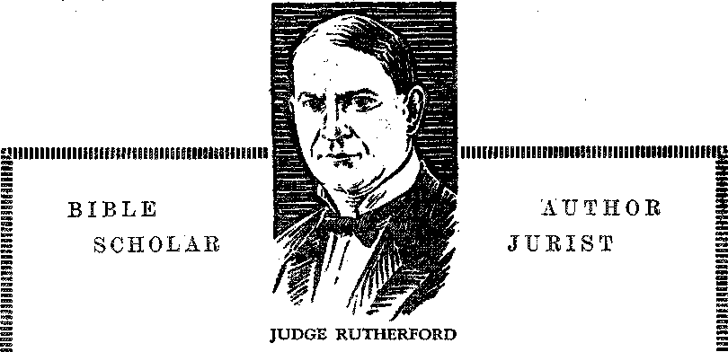

A JOURNAL OF FACT HOPE AND2.COURAGE
MMIWSMHHOiMWffifflBmSMIliMIIIIMWHffllSfHHIIl!
in this issue
SLAVERY
IN 1931 AND BEFORE
FIVE DOLLARS IN CIRCULATION
MANAGEMENT OF FORESTS
SALVATION BY GLAND ROUTE
IMPORTANCE OF VITAMINS
HOW TO
INHERIT ETERNAL LIFE
mmiiiwiwMiwmfflmffiHwmMMfflmiwomiiWH
every other
.WEDNESDAY
five cents a copy one dollar a year Canada & Foreign 1.25
Vol. XII - No. 305
May 27, 1931 j
CON T E N T S
.T1 .. : ---------■--—■----~~~~
LABOR AND ECONOMICS
39% Lost Their Jobs . . . 554
Relative Poverty of Germany . 554
Wider Distribution or Goose Step 555
In Million-Dollar Income Gass . 555
Hard Times in Canada .... 555
Profits from Injuries to Workers 55'7
Only a Few Know It .... 557
World’s Economic Madhouse . 558
SOCIAL AND EDUCATIONAL
Slavery in 1931 and Before . . 547
Dabs of Paint ....... 554
Teaching Children to Relax . 556
Columbus a Planned City . 556
A Little Historical Item , . 559
FINANCE—COMMERCE—TRANSPORTATION
Facts About the Pullmans . . 553
Railway Across Africa . . . 555
Giant Airliners for African Route 555
31 Hours Across Continent . . 556
Passenger Service to South Amer-
lean East Coast ..... 556 Only Five Dollars per Capita in
Circulation ...... 559
Reasons for Automatic Phones . 558
Traffic Conditions in U. S. A. , 560
POLITICAL—DOMESTIC AND FOREIGN
Electric Rates in Cleveland . . 557
Venezuela Still Submerged in Oil 557
Democracy Set Back 100 Years 558
Headed foe the Incline . . . 561
AGRICULTURE AND HUSBANDRY
Corporation Farming .... 554
Detroit’s Emergency Gardens . 554 s<The Social Management of
American Forests” . . . 567
SCIENCE AND INVENTION
. Manganese and Maternal Love . 554
Ultra-Violet Rays in the Hen •
House ........ 556
Seattle’s Magnificent Dam . . 557
HOME AND HEALTH
An Easy Road to Health . . 558 Once More into the Breach—
Eugenists ....... 560 Salvation by the Gland Route . 562 Vitamins and Their Importance
to Health ...... 566
TRAVEL AND MISCELLANY
A Week-End in South Africa . 568
Australia’s New Capital . , . 556 Extracts from Interesting
Letters ........ 575
RELIGION AND PHILOSOPHY
Jobs Gone in Five Weeks . . . 554
Had the Right Idea .... 556
Seems to Be Getting the Idea . 565 An Appreciative Saint . . . 569 What Shall I Do That I May
Inherit Eternal Life? . . 570 Usual Mishaps Follow the
Blessing ........ 574
Published every other Wednesday at 117 Adams Street, Brooklyn, N. Y., U, S. A., by WOODWORTH, KNORR & MARTIN
Copartners' and Proprietors Address; 117 Adams Street, Brooklyn, A. K, U. S. A, {CLAYTON J. WOODWORTH. Editor ROBERT J. MARTIN. .Business Manager ' NATHAN H. KNORR ». Secretary and Treasurer
Five Cents a Copy—$1.00 a Year • Make Remittances to THE GOLDEN AGE
Notice to Sitbscribers: For your own safety, remit by postal or express money order. We du not, as a rule, send acknowledgment of a renewal or a new subscription. Renewal blank (carrying notice of expiration) is sent with the journal one month before the subscription expires. Change of address, when requested, may be expected to appear on address label within one month.
Translations published in Finnish, German, Norwegian, Polish, and Swedish.
Offices in Other Countries
British ............,34 Craven Terrace, London, W. 2, England
Canadian ........... 40 Irwin Avenue, Toronto 5S Ontario, Canada Australasian ....... 7 Beresford Rd., Strathfield, N. S. W., Australia South Africa ............6 Lelie Street, Cape Town, South Africa
Entered as second-class matter at Brooklyn, N. Y., under the Act of March 3, 187&
.........I.....................fl
Volume XII Brotfktyn, N. Y.t Wedbae«^ayF May 27, 1931 Number 305
BEFORE the Bays of Abraham slavery was common in Arabia, and is common there to this day. Abraham himself must have been the owner of at least a thousand, counting the women and children, for he had three hundred and eighteen able to bear arms. When Abraham was circumcised “all the men of his house, horn in the house, and bought with money of the stranger, were circumcised with him”. (Gen. 17:27) He recognized a duty to them. At one time he seemed to think of one of these, Eliezer, as his possible heir.
The Midianites who purchased 'Joseph for twenty pieces of silver, and later sold him in Egypt, carried out a transaction with which they were entirely familiar, as were the Egyptians to whom he was sold.
The bondage of the Israelites in Egypt can hardly he called “slavery” in the absolute sense; because the Israelites had their own flocks and herds, and the accounts show that Moses and Aaron and the elders moved about with considerable liberty. The poor, as always, were the ones with “their lives bitter with hard bondage, in mortar, and brick, and in all manner of service in the field”.—Ex. 1:14; 5: 9-18.
Among the Hebrews themselves a thief was bound to ■work out the value of his restitution money in the service of him from whom the theft had been committed, if he was not able otherwise to raise the money required.
A Hebrew7 father could sell his daughter to become a maidservant, with the expectation that she would become the wife of the one to whom she was sold. To a very large extent this custom prevails throughout Asia to this day. It is not considered slavery, but, to the Oriental mind, is a method of caring for the child’s future.
Like the nations around them, the Hebrews reduced some of their war captives to slavery, but all slaves went free in the year of jubilee and in the sabbatical years in between. The slavery could last but six years, unless the slave himself desired to have the term extended. The loss of an eye or tooth gave the slave his. liberty at once, automatically.
Spasms of Righteousness
There are still some five million persons in the world who are in absolute slavery. These are found in nineteen areas: the Asiatic countries of China, Yemen, and the Hedjaz, and the African countries of Abyssinia, Algeria, Egypt, Eritrea, Kufra, Liberia, Morocco, South Morocco, Rio de Oro, East Sahara, West Sahara, British Somaliland, French Somaliland, Italian Somaliland, the Sudan and South. Tripoli.
As a matter of fact, there is hardly a country that can justly escape censure on this score. This is so well known by the statesmen of the world that of the fifty-six members of the League of Nations and about fourteen other organized countries, making some seventy all together, only fourteen out of the total have agreed to the gradual abolition of slavery in all its forms, debt slavery, peonage, conscript labor, etc.
In 1923 the League of Nations organized a Temporary Slavery Commission, which spent two years studying the subject, and their findings caused the world to stir uneasily in its sleep, but when it was proposed to- make the Commission a permanent one the League Assembly had no heart for it. It would drag too many skeletons out of the closet.
Japan has forty-six prefectures. In all of these there is licensed prostitution, which is white slavery. Five prefectures have circulated a petition against this form of slavery, and in seven years of agitation the number of petitioners has increased until one-fifth of the homes in these prefectures are represented, but in the other forty-one prefectures nothing has been done. Japan could hardly be expected to be enthusiastic about a League of Nations inquiry into what she considers a purely 'domestic problem, when, public sentiment is so little stirred by it right at home.
China a Bad Offender
China is a bad offender in the matter of slavery. Her child slaves are estimated to number at least two millions, and may be very many more than that. Recent wars and famines have greatly increased the usual numbers. A missionary of twenty years’ experience thinks two millions a very conservative estimate, as the Chinese are now selling their children on a scale hitherto without a precedent. In one district-four thousand little girls were sold from one community.
No person can read of what happens to the little Chinese girls without a bleeding heart. Torn from their homes at four or five years of age, they are subjected to every cruelty imaginable. Floggings, suspensions, amputation of fingers, gagging, torturing with hot irons and boiling water. All these are common.
One child slave was suspended from the ceiling by her owners and left hanging all night by one rope which bound together both wrists and both ankles. By morning the poor little limbs were mortified and all four had to be amputated. Numerous missionaries from Europe and America are in China teaching the doctrine of eternal torture. It ought to spread in such a devilishly fertile soil.
The Poor Little Mui Tsai
The little girl slaves are called Mui Tsai. Theoretically they are adopted, but this is purely an evasion. They are bought and sold right and left in every part of China, including Hongkong and Shanghai itself. The upper and middle classes buy them for small sums, -work them as slaves for ten years, from five to fifteen, and then sell them at a great bargain to some man who wants a concubine, or else outright to a house of ill fame.
Theoretically the girl becomes free at the age of eighteen, but by that time she is unable io leave the life into which she has been..thrust.. When a Mui Tsai becomes a concubine she not infrequently goes into business as a buyer and-seller of Mui Tsai herself, perhaps a shipper to other markets.
As a consequence the Mui Tsai travel in herds and are treated like cattle. They are shipped to French Cochin China, the Malay States, and British North Borneo. Some are brought into America as the wives, sisters or daughters of .Chinese merchants. Once a mother sells her daughter as a Mui Tsai it is almost impossible ever to regain her. The child does not know where she lived, and could not find her old home even if given liberty.
In the city of Hongkong, which, though a Chinese city, is under the British flag, there are now about 10,000 Mui Tsai, sold by their parents either into domestic service or into prostitution. The British are xnuch ashamed of this and have tried numerous times by proclamation and otherwise to put an end to the evil, but to no avail. .
Chinese boys are enslaved, too. In Shanghai 31 boys between the ages of 12 and 15 were found confined in a blacksmith shop, where they worked long hours, day and night, and were given but two meals of rice daily. They had no beds, but were forced to take their rest on the floor. Marks on their bodies showed they had been burned with hot irons. Any lad who refused to work was handcuffed and suspended on a wall.
Elsewhere in Asia
Uncle Sam owns the Philippines, and there is peonage there, despite legislation against it. The huge estates of Malaysia rely to a large degree upon imported or contract labor. Chinese coolies out of work have been sent from Singapore to Sumatra to ■work fourteen to sixteen hours a day under conditions that amount to slavery in woodcutting establishments.
■Arabia is one of the worst offenders, having 700,000 slaves. Slavery is carried on everywhere from Syria to the Gulf of Aden. At Jeddah there is an old-time slave market where men and women from Africa and girls from Asia are sold at auction. Every Arabian chieftain has his slaves. Many of these eventually arrive at positions of honor and distinction.
In 1926 Maharajah. Sir Chandra Shum Shere Jung, of Nepal, at a cost of $1,400,000 set free some 52,000 slaves, while 23,000 others were voluntarily released by their owners. Nepal is on the border line between Tibet and British India and is under nominal British rule. One of the features of this emancipation is that owners shall provide work and pay for the freed slaves for a period of seven years or until the ex-slave finds employment.
In 1927 slavery was abolished in the state of Kalat, Beluchistan, a dependency of India; in 1928 it was abolished in the wild country of .Upper Burma known as the Burmese Triangle. A total of 1,028 slaves were released and $75,-000 was granted to their owners. This territory is nominally British, but unadministered. In 1929 slavery was abolished in Persia.
Abyssinia, Worst of All
The greatest center of slavery in the world is Abyssinia, or Ethiopia, as it is sometimes called. Here 2,000,000 of our fellow men are in bondage and without any hope of escape. The king, Ras Tafari, has prohibited their sale, but not their possession, and the traffic goes on in spite of him.
The slaves come from the western borders of 'Abyssinia, where it touches the Anglo-Egyptian Sudan. The traffic is so great and slaves are so plentiful that even the servants have their own bodily attendants. They have no rights, and every duty.
In this part of the world it is impossible for a slave to escape. Most of them are seized when young, and have no idea where they came from. Their physical type marks them. When a Chau-kulla, a Sidam or an Oulamo is found wandering he must tell who is his master; if he does not tell, the person who finds him keeps him for himself.
Most of the slaves for Arabia come from this same area. As many as 10,000 of them go in a single caravan, the men chained together in rows, the women and children following. A writer reports seeing, within the past few years, the corpses of fifty who had dropped by the way, in a single day.
These slaves have to be smuggled through Italian, French or British territory and across the Red Sea to get them to the slave markets of Arabia; but in spite of police patrol boats the traffic continues, though it is not as heavy now as it once was.
Ras Tafari seems to be sincere in his efforts to abolish the traffic; but what can one man do ? The so-called "Christian” priests of his country have their slaves, and so do the magistrates, and there is a tacit agreement all around not to interfere with what has been going on for centuries. The excuse is that the slaves must be given time to learn how to make their own living. The law provides that on the death of an owner his slaves become free automatically, effective seven years after that event takes place.
Do you wonder why western Abyssinia has for centuries been the gathering place of slaves? It is because the more cruel races of men, notably the Arabs, have learned that here are men, of powerful frames, able to bear huge burdens, and at the same time about the most peaceable people in the world.
The Koran expressly permits Moslems to obtain slaves by conquest. During the Dark Ages, and more recently, the Moslems of the Barbary States obtained white slaves by piracy in the Mediterranean. But for the ability of the Europeans to make better rifles the Moslems would have overrun the world.
Liberia Is Bad, Too
Liberia was founded on the west coast of 'Africa in 1847 by American Negroes who had once themselves been slaves. One would think that these men and their descendants would have been most careful to see that nothing like slavery should ever survive or take root in their country. The very name of the country shows that it was to be a haven of liberty for all.
But alas for the frailty of fallen man! In due course of time a pawning system developed, which is merely slavery in another form. A man gets hard up for cash. He takes a child or other dependent and pawns him for an indefinite period for indentured service without compensation other than maintenance. No person pawned can redeem himself. The pawn value of men for the last ten years has been $15, and for women $30.
The pawning abuse grew until out of a population of 2,500,000 the League Commission on Slavery estimated that about one-sixth or approximately 400,000, were in bondage. The United States took a hand and wrote the Liberian Government such a sharp note that both the president and the vice-president resigned. The vice-president, indeed, was personally involved in the human pawnbroking scandals. Here is how it works.
Fernando Po is an island in the Gulf of Guinea given over to cocoa plantations. It is nearly on the equator and a white man can hardly endure it to work in the broiling sun and ; enervating climate. A Spanish tramp steamship calls at a Liberian port.. The captain sees a prominent Liberian official and offers him so much a head for conscript labor. The word is passed on to the native chiefs. Each must deliver his quota or be fined $50. The amount received is split up among government officials, labor agents, raiders, the constabulary and the chiefs. The head of a family gets something for pawning his son to the chief, with good chances that he will never see him again alive.
All Africa Is Affected
Slavery has persisted for so long in 'Africa that it seems to be almost indigenous. It is not only the whites that are involved, but the blacks ecpially so. For centuries the Negroes have had intertribal warfare and enslaved their captives. The whites have taken advantage of this and used the Negroes to catch one another.
In 1928 a quarter of a million domestic slaves were set free in the British protectorate of Sierra Leone, West- Africa. These constituted nearly one-fifth of the inhabitants. Although formally given their liberty, these captives or children of captives for the most part remained with thei.r masters.
Portugal periodically frees her slaves, but the conditions do not change with these paper promises and proclamations. Forced labor (slavery) was in full swing in Angola, West Africa, in 1929, only two years after Portugal’s last emancipation proclamation.
The gold mines of Johannesburg, the diamond mines of Kimberley, the copper mines of the Belgian Congo, the great British estates in Kenya, and many other interests throughout Africa, including Mr. Firestone’s plantations in Liberia, require more labor than is immediately available on the spot, and steps are taken to procure it.
All over South Africa are labor agents who induce boys to leave home to work in these different undertakings. At the labor camps they are herded in compounds which resemble army barracks. Wherever they go these boys must have passes to move about, and it is a criminal offense to leave. The death rate in these compounds is five to fifteen times the European death rate. Students of African affairs have declared that unless some change is made in methods of securing African labor the native population will ere long become exterminated.
Slavery is gradually disappearing in the Su-'dan, though it still flourishes in the oasis of Ku-fra, in the Libyan 'desert. It still exists in the form of military conscription in the French island of Madagascar, the third largest island in. the world. It has been abolished in Tanganyika, where 185,000 slaves were set free since the World War, but Africa is still, in every sense of the word, the Dark Continent.
Slavery in Europe
With the exception of the monasteries and convents and prisons and asylums Europe is now without slaves, though in 1929 a youth of nineteen was brought from Durham to Kent to work as a houseboy from 6:30 a.m. to 10:00 pan. at a wage of 4 shillings a week, less insurance. “Slave/’ by the way, is a European word. In the early Middle Ages the slaves of western Europe were chiefly Slavs or Slavonians; hence the term “slave”.
The civilization of ancient Greece was built upon slavery, and eventually perished because of that fact. Her so-called “philosophers” spent so much time windjamming that they finally ran out of common sense and forgot how to do anything that was really worth while.
Slaves in Greece were denied the right to marry, but an abused slave could demand the right to be sold, and could not be killed by his master, even if he slew one of the master’s family, but had to be tried by a court. He could be examined as a witness only by torture, because it was held that he would surely lie if not tortured.
In Rome the slave had originally no rights and could be put to death for the smallest misdemeanor. They were exceedingly numerous, one man in the time of Augustus having four thousand. They monopolized all the handicrafts and occupations and professions, including that of gladiators.
There were revolts, as in the days of Spar-tacus, 73 B.C. Before the burial of Pompeii the crater of Vesuvius was a favorite hiding place for the poor things. In the second century Roman law forbade the making of eunuchs of slaves, and stopped the sale of children and slavery for debt, yet the making of eunuchs has not entirely stopped, for there is a boy choir of eunuchs in Rome to this very day. The Devil hates to let go of humanity.
In the sixteenth century there was a wholesale trade in slaves centering at Constantinople. At that time the Black Sea was in effect a Turkish lake, and ilie beautiful Circassian girls were encouraged by their mothers to look forward to the time when they would be purchased by some rich pasha. Circassian girls of aristocratic families caused themselves to be offered for sale, with the stipulation that they might be bought only by a Turk whose station and appearance pleased them.
When Russia finally stopped this slave trade many Circassian girls stabbed themselves or threw themselves into the sea rather than be diverted from the Turkish harems by so hated a power. Yet these girls knew they were to be sold on the auction block and that when they left home they could never return, even for a visit.
Convent slavery is somewhat similar. It is voluntary, at the start, but there are walls and bars to cut off retreat, and even if the girls want to return to their fathers’ homes they cannot do it. Nor may they even talk with outsiders except in the presence of a spy.
In 1833 Great Britain abolished slavery in most of her colonies. One hundred million dollars was allowed the owners. The West Indies went free in 1839; India, in 1843. Sweden abolished slavery in 1846; France, in 1848; Holland, in 1859. Germany had several hundred thousand slaves in her colonies at the outbreak of the World War.
Slavery m North America
When the Spaniards first landed in the New .World the first thing they did was to enslave the Indians, patting them to work in the mines. Treated with unexampled cruelty the redskins 'died like flies, and in 1517 the Spanish clergyman Las Casas made the suggestion that Negroes be imported into the West Indies to save the remnants of the unhappy Indians.
The African slave trade at once sprang up, and all the so-called "Christian” nations of Europe engaged in it. John Hawkins brought 300 in October, 1562, though the Portuguese had landed some in Santo Domingo half a century earlier. The first African slaves, 20 of them, sold on the North American continent, were sold in Jamestown, Virginia, by a Dutch ship of war, in exchange for provisions. The colonial government purchased them and resold them to private settlers.
In the early years of American colonies 50,-.000 men were exiled here from England and sold into slavery ranging from a few years to life. A man agreed with some shipowner to sell his services for a term of years to any purchaser that would would pay the passage money. The diary of John narrower states that he ‘was obliged to engage to go to 'Virginia for four years as a schoolmaster for bed, board, washing and five pounds during the whole time’. Many such servants, on expiration of their time, set up for themselves and founded families. White servants frequently ran aivay from their masters and were advertised, pursued, arrested, whipped and branded as other slaves.
When the Declaration of Independence was drawi! up, declaring that "all men are created equal”, about one-sixth of the community were actual slaves. Newport and Bristol, R. I., were centers from which, regular raids on the African coast were made, and vast numbers of Negroes were seized and brought here into slavery.
Although slavery was forbidden by the constitutions of Massachusetts and Rhode Island, the capital for the Rhode Island slave raids was largely obtained in Boston, and slavery was common in both states. The Old North Church in Boston still contains a gallery that was used by the household slaves of some of the families that furnished the capital for the raids in question.
The treatment of the slaves varied greatly, depending upon the owner’s benevolence and the development of the community’s conscience. In 1780. in a certain American state, a Negro who had killed a white man wTas confined in a cage and left, there to be devoured by the elements and by insects. He was found by Saint-John Creveeoeur, and although his eyes had been destroyed he was still living when Creveeoeur saw him.
The Cause of the Civil War
The development, of slavery southward was 'due to the invention of the cotton gin, which made cotton a profitable crop, capable of being tilled by slave labor. At this time objection to the evangelization of slaves was raised on the ground that a baptized slave might claim freedom as a Christian.
Slavery in the North gradually became unprofitable ; and between 1777 and 1800 Pennsylvania and the states north of it had abolished it. Those who found it unprofitable could see many reasons .why it was wiehristian. 'At the beginning of the Civil War there were 384,000 slave-owners in the South. Three-fourths of the whites owned no slaves at all, but defended the institution.
Owners and managers varied greatly in intelligence and temper, and treated their slaves accordingly. Occasionally the most kind-hearted and easy-goingwere the least successful and had to sell their holdings, thus causing the heartrending breaking of family ties. By 1860 onesixteenth of all slaves had been freed, and many were enjoying full citizenship.
At first a Negro could be had for $50. By 1830 they were worth $500. By 1860 a prime cotton hand was worth $1,500. In. 1850, 2,000 families owned as many as 100 slaves each, and one family had about 2.500. After the Emancipation Proclamation prices went away off. At Frederick, Md., a girl of eight years of age was sold for one dollar, and a woman for fifteen dollars.
For two centuries the American people as a whole profited by the unpaid labor of the Negro, and then set him adrift, ragged, unguided and unlettered, to assume the burdens of citizenship and to be further exploited by politicians. It has been said that the back wages of the slaves were paid in the flood of white blood poured out on their account in 1861-1865.
After the war was over many Negroes returned to their former masters and begged to be taken back in return, for their keep. They settled down in their old quarters and refused under any circumstances to leave. The Old Slaves Reunion, still held once a. year in Alabama, is a sort of love feast of the old-time masters and their slaves who yet survive.
Other Slavery in North America
In. 1928 the leasing of convicts to coal-mine owners was brought to a close in Alabama. This ended one of the most disgraceful forms of slavery ever permitted in recent years. It required a particularly brutal murder of a convict to bring about this change.
In 1929 a white slave circuit was found operating in. a chain of cities reaching through Massachusetts, Rhode Island, New York and Pennsylvania. The unfortunate girls on this circuit were shipped from one place to another like so many animals. Fifty murders were traced to this circuit.
Peonage still exists in. some parts of the South.
Negro tenant farmers are kept in 'debt year after year, and if they try to escape or leave they are imprisoned and fined. White landowners have a working agreement that one will not take tenants from another if those tenants are indebted.
The tenant farmer gets his annual credit of $200 in March. Of this, $50 goes for fertilizer, and $50 for feed for the livestock used in putting in his crop. Of the remaining $100, $10 goes for interest, and the balance is turned over to the tenant at the rate of $15 a month for six months. The crop is sold by the landowmer, and if the tenant owner is shown as having-anything coming back to him he is lucky.
In South America
In 1912 the world was stirred by hearing of the conditions of slavery on the Putumayo rubber plantations of Peru. One district won. the name of "'Devil’s Paradise”. When the free men and women of the district asserted their right to wrork or not, as they pleased, they were shot down remorselessly or subjected to tortures. Whole families were exterminated.
There is still slavery in South America, certain tribes in the remote parts of Ecuador, Peru and Bolivia killing off the protectors of families and then taking the women off to sell to white people who own large plantations,. This slave trade is even encouraged by the whites, who offer large rewards for the workers brought to them.
An even more terrible form of slavery was unearthed at Buenos Aires. It was brought out a year ago that the Zwi Migdal Society, operating under a charter issued in Buenos Aires as a mutual aid society, wTas in reality a huge and highly efficient white slave machine. It had branches throughout Argentina, and Poland, France and other European countries. For forty years this company was engaged in the business of importing, exploiting, buying and selling Polish Jewish women, bringing them from Poland to Argentina as white slaves. The judge’s investigations showed that the 424 men who comprised the membership of this society were all engaged in the traffic in women.
Few of our readers, even after reading this article, have any adequate conception of the horrid conditions that obtain this very day .in every land, and of the wretchedness that is thereby caused to millions of innocent people. What a wonderful day it will be when all these prisoners are set free in the fullest sense of the
word, and how happy every honest heart will be to have the nightmare of Satan’s rule for ever at an end! '
THE Pullman Company have out some charmingly gotten-up little books filled with facts about the wonderful service which these rolling hotels provide. They are all well worth reading, the twelve of them. We mention a few items that appeal to us at the moment, selected here and there from the set sent to us by some unknown friend. ’
Pullman ears are like the robins; they go north in the summer and south in the winter, but, unlike the robins, some of them are always in the North. In the matter of car requirements the various railway lines vary enormously. One road served its Florida travel in October with an average of 24 cars, but required 105 in February. Another used 96 in August and 227. in March, A New England road got along nicely on 46 cars in March, but in August used 104.
• The trucks of a Pullman car today weigh 10,000 pounds more than the first car weighed complete. The first one was lit by candles. The latest ones have a mile and a quarter of electric wires in each car. The first one had a tin washbasin; the present ear has a half mile of pipes for heat, water, wires and air, besides a complete electric generating, storage and distributing plant operating lights, fans, etc. Some of the first cars had organs and hymn books. When a man bought a sleeping car ticket he tvas put in the same bed with a total stranger, who bought the other half of the bed.
Between the outer and inner plates of the sides of a modern Pullman car is a space of about four inches, where, along with all the concealed pipes, duets and conduits, are over 6,000 square feet of insulating blankets (treated felt , and asbestos) to hold the heat in winter and exclude it in summer.
Mrs. Pullman, if there is such a lady, is the world’s greatest housekeeper. Every night she provides beds for 60,000 people, and in a year the guests number about one-fifth of the country’s population. The stock of towels, sheets, pillow slips, blankets, pillows, mattresses, head-1'est covers,, and similar items, is well ovex- ten million pieces. More than a hundred supply 'depots keep the 9,700 cars supplied with these necessities. The.'daily journeys of the cars run. to 3,306,184 miles.
One of the booklets says: “But a consideration of the Pullman washing will give the biggest kick. Remember that about 34,OCX),000 guests occupy Pullman guest accommodations in a year. If the linen were all to come out of the wash at once it would total 284,685,235 pieces. If this were hung diagonally across the American continent, you would have to stretch 20 lines from Key West to Nome to accommodate it.”
The Pullman people feel justly proud of their safety record and say:
The National Safety Council and the U. S. Bureau of Census accounted for nearly 96,000 fatal accidents in. 1928. Automobile accidents cost over 26,000 lives; falls, 17,000; drowning, 8,500; and burns 6,500. Onefourth of fatal accidents happened to persons in their own hom.es. Against this, consider that in 1929 only 114 railroad passengers lost their lives, and of these only 8 were in Pullmans—drowned when a train crashed through a bridge weakened by a mountain cloud-burst. But for this no Pullman passenger w'ould have lost his life in 1929; yet in that year half of all railroad travel mileage was covered in Pullmans, and; Pullman passengers numbered just about one-third of the country’s population.
The claim is made that the 'American sleeper rate is lowmr than, either the first class or second class European rate. Of the European sleeper service one of the booklets says:
In some European countries he^t is from locomotive steam; in others from a coal-burning water heater at the car’s end. A variety of car arrangements will be encountered on a European tour. One car has two seats for six passengers in a compartment; day-time passengers may use these until a certain hour, when they must be made down for night passengers—two lowers, two uppers. In some cars of this type no bedding is provided. Another arrangement affords three sleeping places in a room; one patron may take the entire room on three railroad and three sleeper tickets; or three strangers may find themselves in it. Yet another plan places two or three ehair beds in a room; at night the chair backs are pulled forward and down, making a bed. Only the arm-rest separates the sleeping passengers. A woman demanding a berth when there is none available save in a room with a maihjgeta it if he assents; and vice versa. "
Corporation Farming
THE Farmers Union Herald, of St. Paul,
Minn., states that under the chain farm system twelve men working for $4 a day will 'do the work of fifty-three farmers, and wants to know what is to become of the forty-one men and their families that are thus displaced.
Have You Your $2,977?
IF YOU have $2,977, then yon have your share of the national wealth, which is figured in 1929 as having amounted to $361,800,000,000. In Idaho, Iowa, Nebraska, Montana, Oregon, South Dakota and Wyoming the average citizen has more than $4,000, and in Nevada more than $6,000.
Telephone Crowd Gets More than Ever
AS ARESULT of the boost in telephone rates, made coincident with the present wave of hard times, the New York Telephone Company collected over $14,000,000 more from the public in the distress year of 1930 than in the boom year of 1929. How these Big Business men make you love them for their thoughtfulness, generosity and patriotism, don’t they?
Detroit’s Emergency Gardens
DETROIT has resumed its war gardens, after
an. interval of more than twelve years. Now the war, instead of being against the Germans, is against hunger of the poor. There will be 5,000 gardens, each 40 by 100 feet, and when necessary the plots will be tilled in advance and seeds supplied. The funds to put these gardens in working condition were provided by employees of the city.
Real Estate on Wall Street
O NE HUNDRED years ago, namely on March
17, 1831, the Bank of America bought the property where the bank is now located, at the corner of Wall and William streets, New York city. The price then paid for the. <50-by-100-foot lot, together with the building upon it, was $70,000. Today real estate appraisers estimate that the value of the land alone is more than $6,000,000. The present building is the fourth ©ne to stand on the site.
Where Christ Would Be Sent
A rthur Brisbane, ■writing of the second ad-vent of Christ, says:
If Christ came to earth now, preaching as He preached 1900 years ago, immigration authorities of the United States would keep Him out and advise Him to go to Russia. He told the rich man to divide his wealth among those that had nothing.
99% Lost Their Jobs at Donora
TN A CERTAIN billet mill at Donora, Pa.., 99 *- percent of the workers have lost their jobs. It formerly took 600 men to operate the mill; now the same work is done by machinery and requires only six men to throw the necessary switches. The machine never gets hungry, never goes on strike, never wants more pay.
Jobs Gone in Five Weeks
Dr. Miles H. Krumbine, pastor of Plymouth Church of Shaker Heights, Cleveland, Ohio, is alleged by the Cleveland Plain Dealer to have recently said in a public address that “there is not a preacher in this or any other city who could last five weeks in his job if he spoke the convictions that are in the depths of his heart”. The Millennium is at the door, sure enough.
Manganese and Maternal Love
ipXPERIMENTS of Dr. Elmer V. McCollum, of Johns Hopkins University, show that rats deprived of manganese cease to breed and have no interest in their young, but if their diet contains even so little as five one-thousandths of one percent of manganese they appear normal in every way. This discovery is expected to have far-reaching effects. It certainly emphasizes the importance of variety in diet.
Relative Poverty of Germany
TN THE United States $250,000 would seem like a relatively small fortune, but in Germany it is considered a great sum (a million marks) and the people are quite disturbed over the fact that they now have in their midst so many as 2,465 Germans who have this much property. An interesting fact is that, owing to greater employment of women, Germany now has 9,000,-000 more persons working for wages than prior to the IVorld War.
Wider Distribution or the Goose Step
"Dobebt P. Scbipps, president of the Scripps-
Howard newspapers, says that in his judgment unemployment must be solved through shorter hours of labor and a wider distribution of wealth among the workers or the alternative is the goose step, one way or another, Lenin or Mussolini, with little choice.
In. the Million-Dollar Income Class
IN THE year 1920 there were 33 persons in the
United States who admitted receiving incomes of $1,000,000 or more per year. Nine years later there were 504 such persons, or fifteen times as many, and the total income of those in the million-dollar income class had grown from $77,078,139 per year to $1,185,135,330 per year.
Uailwag Across Africa
THE first railway across Africa, from Portuguese East Africa to the Portuguese colony on the west coast at Lobito Bay, is now7 in operation. The road has been in process of construction, off and on, for twenty-eight years. It provides outlets for the copper mines of Northern Rhodesia.
Giant Airliners 'for African Route
THE giant airliners that will be in operation
on the African Cape-to-Cairo route, beginning with June, accommodate thirty-eight passengers each, besides more than a ton of mail and freight. These liners are the same as those used between London and Calcutta. The trip from London to the Cape will require eleven days; the distance is 8,040 miles.
Hard Times in Canada
IT IS not only in the United States that we are having hard times. They are harder still in parts of Canada. In some localities butter went down to 10$ a pound, and eggs to 15$ a dozen, but even at this price the farmers could not afford to purchase or to keep for their own use. There are farmers who live in tiny shacks, with boxes or stumps for chairs, and they have been found in their homes making a meal of soup made from Canadian thistles. It was all the farmer had left wherewith to feed his family. These items are from the Ottawa Citizen and the Manchester Guardian.
Cigarette Consumption Doubled
TN 1913 there were 116.900,090 pounds of fo-* baeco used in the manufacture of cigarettes; in 1929 there were 34.(1000,000 pounds used for the same purpose. The daily increase over sixteen years ago amounts to more than seventeen tons a day. The damage thus done has been inconceivably great.
Ice in the Antarctic
WE ARE informed by Sir Hubert Wilkins that if all the ice in the Antarctic-were to melt in a day it would raise the sea: levels thirty feet throughout the world, and also that if the ice already drifting could be: gathered in one pile a mile square the column would reach almost to the moon.
African Game Being Decimated
Majob Kingston, of the Royal Geographical
Society, maintains that in another fifty years, at present rate of slaughter, there will not be an elephant, rhinoceros or hippopotamus left alive in Africa. Hunters have recently been forbidden to hunt lions from airplanes. Few lions are bad actors.
Destruction of Jericho
Joshua was to utterly 'destroy all the citi.es of
Canaan, and the account shows that he did so. Recent discoveries of arcbmologists revealed some storerooms for grain and other supplies on a slope in the interior of the city of Jericho. All their contents (wheat, thatch, wood, rope, dates, and a cake of bread) were burned to cinders. Thus the Bible account in Joshua 8: 20 is abundantly confirmed.
Norwalk Pastor Promoted
NORWALK (Connecticut) pastor has been promoted to doing something useful for his fellow men. Owing to the hard times, he could not get enough out of the collections to keep going; so he took a job on the city dump, sorting rubbish. Now he has given up the preaching altogether and is becoming a first-class rubbish sorter, and probably has overalls and & clock. It may seem a little hard just now, but it is really a lot more honorable than to harden the minds of the people against God and get them to hate Him by misrepresenting Him. The pastor is now in a cleaner and better business.
Teaching Children to Relax
SEATTLE kindergarten teacher has introduced a ten-minute rest period into the lives of the tots in her care. They lie face down on paper mats spread on the floor, head turned to the left, right leg extended, left leg slightly bent, arms hanging limply. After a while the kids get so'they like it and beneficial effects are observable. The nervous tension relaxes.
31 Hours Across Continent
THE National Air Transport has now in operation a day and night passenger and mail schedule which lands the passenger in San Francisco thirty-one hours after leaving New York. The return trip is made in 28 hours. The states of Iowa, Nebraska and Wyoming are passed during the night. The rest of the trip is by daylight.
Passenger Service to South American East Coast ASSENGER service is now maintained from Miami to the east coast of South America.
The route is via Trinidad, Georgetown, Paramaribo, Cayenne, Para and Rio de Janeiro. The terminus of the route is at Santos, Brazil. The Pan-American Airways now has a 22,000-mile system in operation throughout the West Indies, South America, Central America, and Mexico.
Columbus a Planned City
OLUMBUS, Ohio, is one of the few’ planned cities of the United States. Its location as the capital of the state of Ohio, in the center of the state, was decided upon before a stone was laid or one stick nailed to another. The population of the city and suburbs is now7 rated at 335,000. It is commonly said that you can get to Columbus overnight from almost anywhere in the country, and this is almost true.
Had the Right Idea
ev. Louis F. Martin, of Kankakee, Ill., speaking before an Episcopal clergy round table in Chicago, is alleged to have said that organized Christianity is now in a “compromise with the modern world”. He asserted that it was engaged in building up an institution rather than finding God, and advocated the burning of all parish registers and starting all over again. He must have gotten hold of some of Judge The “City of Truro" in a Museum
Rutherford’s books, we think, and must have an | the whole earth and everything honest heart. He is in the wrong business. , sorry job they have made of it all,
THE “City of Truro'’, the locomotive that in 1904 made the record of 102.3 miles an hour on the Great Western tracks between London and Plymouth, has been renovated and sent to the York Railway Museum. This run is one of seven well authenticated runs of over 100 miles an hour. The fastest run on record ivas near 'Jacksonville, Florida, at 120 miles an hour.
'Australia’s New Capital
USTRALIA’S new capital, Canberra, planned to be the most beautiful city in the world, had last year only 8,695 population, an increase of only 161 persons in a year. The construction of the city has cost $65,000,000. It is said to be not popular because laid out on too grand a scale, making it hard to get around. There is even talk of abandoning it.
Communist Radio Works Overtime
ERMANS are nettled and worried because the powerful radio station at Moscow is flooding all of Germany with communist lectures in German, English and other languages. When protest is made the Russian officials blandly explain that they have in their midst many Germans, English and others whom they feel it a 'duty to instruct and entertain.
Ultra-Violet Rays in the Hen House
OR twelve cents an hour ultra-violet rays can be diffused among a hundred chickens. In six wTeeks time one hour a day of this exposure brought two cockerels up to twenty ounces each, while two others not thus treated remained behind at eleven ounces each. It won’t be long now until we shall all be eating the best violet ray broilers.
Property Rights in 'America
IN Commerce and Finance, Stephen Bell, arguing for unemployment insurance in the United States, and convinced ■with Mr. Owen D. Young that it must inevitably come in some form soon, calls attention to the fact that the earth is the Lord’s and that in America -we have overdone this matter of property rights. It seems to have been quite overlooked that the Lord has any right whatever to administer things. Big Business cheerfully undertakes to administer on it, and a
Mr. Edgerton’s Act of God
ohn E. Edgeeton, president of the National Manufacturers’ Association, says that the current depression is an act of God. He thus fixes the responsibility for America’s nationwide mania for stock gambling, and the outcome, but meantime the Telephone Trust and the Power Trust are making more money than ever. Maybe now Mr. Edgerton will tell us who is responsible for these exceptions to the general rule. But we know without his telling us.
Billy Sunday’s Confession
MANY have wondered who is really to blame for the colossal crime wave which ■ has swept over America since the Volstead Act was passed. Now it all comes out. In an address at Nev,7 Haven, Billy Sunday made the boast, fT am blamed more than any other man in America for the passing of the Eighteenth Amendment.” Now if Aimee Semple McPherson will come out and make her confession .we shall feel that W’e are getting somewhere.
Profits from Injuries to Workers
ORTH CABOLINA. public officials have noted that private insurance companies
collected $2,799,962 in premiums for compensation insurance for those injured in industrial accidents, while but $1,792,602 was returned to the workers in benefits. This discovery of. more than a million dollar’s difference is liable to cause North Carolina to follow the example of Ohio and make workmen’s compensation insurance a state monopoly.
Only a Few Know It
IN AN interview in Florida Henry Ford said that these really are good times, but only a few know’ it. That latter statement seems to be true. After all, there are only a few people in the Telephone Trust, the Power Trust and the other aggregations of capital that have the people by the throat. Mr. Ford seems to think there is plenty of work for everybody. We can but wish he would spend a few days talking to the miners of the anthracite region, thousands of whom have the distinct impression that they have had but 56 'days of work in a year and that the times -which Henry says are ‘really good’ are really bad.
Seattle’s Magnificent Dam
IABLO dam, recently completed by the city of Seattle, Washington, is 389 feet high, over all, the highest arched dam in the world. Below is the Gorge plant, also owned by Seattle, and above it will be built Ruby dam, which will be 620 feet high, creating a reservoir that will back the water up 34 miles. This will be 200 feet higher than any other dam thus far built, but still will not be as high as the Hoover dam, now. building in the Colorado.
Electric Hates in Cleveland
T A TIME when the private companies were charging 15 cents a kilowatt hour, the Cleveland (Ohio) municipal plant started in with accent maximum, which it has kept ever since. Paying for itself and its extensions at these low rates, the plant has compelled competing plants to reduce their rates and is saving the people of Cleveland over a million dollars a year. At present there are more municipal plants in the .United States than privately owned ones.
The Electric Carillon
HE old-style carillonneur has had his day, and that, too, just as desperate efforts are being made to revive it. By a nevr device small chimes similar to those on a clock are struck by tiny electric hammers, and the sounds thus made can be so magnified electrically that they can be heard for miles. Runs or thrills never before possible can be made, sounds never before heard can be created, and a new music which will utilize these sounds is forecast.
Venezuela Still Submerged in Oil
OR thirty years Venezuela has been submerged in an oil dictatorship. An article
in the San Juan (Porto Rico) Times shows what happens when one offends the dictator, Juan .Vicente Gomez. He is loaded with irons, sometimes as many as three sets, and without trial is thrown into prison. After a few days the body is unable to bear the weight of the 30 to 1® pounds of metal attached to it, gangrene sets in, and death results. It is said that in the thirty5 years in which the oil crowd have kept Gomez in his chair 1.5,000 have thus been done 'death, 5,000 are awaiting death, and 100,0® Iwy® fled the country to escape similar fates. 5
The World9 s Economic Madhouse
THE Manchester and Salford Trade Council, with 80,000 members, has just issued a manifesto against the world’s present economic madhouse in which it says, in part:
As the ability of workers to consume is decreased the surplus of unused goods must increase, and the cause of all our distress will inevitably be multiplied. The more overproduction there is, the greater is the underconsumption. The more the workers produce, the less are they and their families able to consume. The harder the workers work, the more prolonged and terrible is their subsequent unemployment. Out of the surplus of riches arises semi-starvation. for millions. On the authority of M. Albert Thomas, of the International Labor office, no less than 100,000,000 persons axe suffering today in the world because of unemployment. Could there be a more tragic, a more absurd, a more monstrous series of contradictions?
Wheat Growers All Frightened
WHEAT growers all over the world are frightened by the surplus now piling up, and the entry into world markets of the great Russian wheat-producing machine, with which individual growers will be quite unable to compete. Argentina is trying to make a treaty with Canada and Australia for control of exports from the three countries, and American 'wheat experts are advocating the elimination of American-grown wheat from foreign markets. They would have America raise wheat only for domestic consumption; and only millers and authorized dealers would be permitted to purchase at the proposed fixed price of $2 a bushel. If this deal goes through, watch our farmers turn into bootleggers of wheat. All European grain-producing countries except Russia are facing agricultural bankruptcy.
Democracy Set Back 100 Years
OpHE press is reverberating with the address J- of Fred B. Smith, at Detroit, early in March, in which, referring to the vicious propaganda spread throughout the United States by the churches themselves, during the World War, he made the statement regarding the war slogan on democracy:
That was our cleverest platform utterance during the war. Democracy? Why, the -war set democracy back more than a hundred years. How about the Orientals ? Can you expect them to accept the religions of the Western nations -when we go to them with a Bible in one hand and a sword in the other? I don’t mean to cast any reflections on our missionaries, who certainly are doing the best they can. But why should Buddhists, who are pacifists, be expected to accept the religion of the bloody nations?
Reasons for Automatic Phones
IT IS comical, in these days of unemployment, to see the multitude of reasons that are advanced as to why automatic telephone installations are spreading all over the world. The telephone propaganda carefully explains that these automatic telephones are not being installed because they are labor-saving. Oh, not at all! It is just because they are more efficient, and because too many women operators get married and too many subscribers speak too many tongues, and too much of the old manual equipment had become old and inefficient, and telephone work for a woman is merely a temporary job, anyway, etc. Indeed, t there are so many reasons, and they are given so glibly, that one wonders why it should have seemed at all necessary to say that they are not being installed because they save labor. But the publicity men of the Telephone Trust must do something to justify their keep, must they not? '
An Easy Road to Health By Mrs. Florence Bowers '(California')
MY HUSBAND looked like a walking dead man. We thought he was suffering from stomach ulcers. My little son had violent attacks of stomach trouble in spite of the fact that his diet was above criticism; and I had brown spots all over my body. Then we learned through The .Golden Age that aluminum is poisonous, and
immediately discarded all our aluminum and bought enamel ware. .
Now, after a year, my husband is practically restored to health and gaining in weight regularly. The brown spots have entirely left my body, and my little son has never been ill a day since we discarded that terrible aluminum. This is absolute fact.
I HAVE your letter of the 4th instant quoting a newspaper clipping that reads as follows:
Washington.—Each person in the United States is the possessor of $37.30 in cash, the Treasury department estimated in announcing the amount of money in circulation. The per capita possession is $2.32 less than a year ago, when the figures were placed at $39.62.
It proceeds to say that the total amount of money in “circulation” is four billion seven hundred forty-six million dollars, a per capita circulation of $37.30.
You ask for my interpretation of it and say that you will have my reply published.
I am glad to do this and to expose this false statement. The falsity of it hangs on the word ‘■'circulation”.
The Treasury department at Washington issues a monthly statement as to the amount in existence and where it is, from which these figures you quote are taken, and under the caption “Circulation” it includes all that is in the banks outside of what is in the Treasury department at Washington and the Federal Reserve banks. In other words, all the money in the thirty thousand National and State banks is regarded by them as money in “circulation”.
Under our present financial laws partly embodied in the Federal Reserve Act, the banks are authorized to loan their credit, a checking account based on borrowed money, for an average, of ten times as much as they can show actual money in their vaults, the “ten times” amount
’drawing interest. This law encourages the banks to hoard the money as an asset upon which they can loan their credit, an interest-bearing substitute for money, an amount ten times as much as the money they have hoarded. • ,
The statement you quote counts this money hoarded in the banks as money in “circulation^ • when, in fact, it is not in; circulation, but being.....
used by being hoarded, taken out of circulation to substitute for it that which is bonding and mortgaging and forcing in debt the people of the nation.
The United States Chamber of Commerce at Washington has issued a statement that not to exceed five percent of the money issued to the banks is in the pockets and tills of the people and that the balance of business is done on credit, so that the actual amount of money in', circulation is not to exceed $5.00 per capita; and the statement of ‘$37.30 per capita’ is not true. The stat ement issued by the United States Chamber of Commerce was to encourage the banks to be liberal in extending credit to the people— loaning more money—which is tying more financial ropes around the necks of the people. A' financial system that is strangling the people of the nation, bringing with it all the horrors of the present 'depressed condition; a nation bonded and mortgaged to the limit now sounding a tocsin, an alarm bell, calling out the fire department to put out the fire.
THE other day, examining an old file, the following clipping came to light. This clipping, taken from a newspaper of March 16, 1918, shows the earnest desire of 400 Methodist Episcopal ministers in Philadelphia, to murder Judge Rutherford and his friends.
The use of the words “German propagandists”, “American traitors,” etc., was so much dust thrown in the eyes of the public. The only people for whom the Espionage Act was passed were the Bible Students, and they were almost the only ones to suffer from its so-called “enforcement”.
These facts were well known by the Methodist ministers mentioned in the clipping. They were trying to goad the United States Government into murder, and would do it again if they had the chance. A murderer is a murderer because he is one at heart. Most of these miserable dogs that were murderers in 1918 are murderers now, and some of them will no doubt die as such at the hands of God.
DEATH TO TRAITORS IS CHURCH ADVICE
Philadelphia, March 15.—Death for German propagandists and American traitors was advocated today by the Philadelphia conference, Methodist Episcopal church in resolutions unanimously adopted at the 131st. annual meeting being held here.
“We urge the speedy enactment of a law,’’-the resolution stated, “which will mete out to German propagandists and traitorous Americans the full penalty of spies.”
Amid cheers and patriotic enthusiasm the 400 ministers attending the conference joined in approving the resolutions.
Viscount Cowdray, interviewed by a reporter for the London News Chronicle, gave a very good summary of traffic conditions as they '< exist in the U. S. A.; and although these conditions are familiar to most of our readers, we give place to them, thinking they will be of interest in other countries than Britain within which The Golden Age has readers:
“The Americans, at any rate in the South and West, are building roads at prodigious speed, and I did not see one modern road where they have not provided ‘shoulders’. The ‘shoulder’ is a margin about 8 feet wide, covered with half an inch of gravel and soil.
“Whether the road is 20 feet wide or 40 feet, that margin is made. On it ears pull up when their drivers wish to stop for repairs, or to lunch, or admire the view. The result is that the 20-foot road remains a 20-foot road and is not reduced, by ears at a standstill, to 10 feet. The margin adds greatly to the efficiency of the road and practically nothing to the upkeep.
“Some of the new main roads near Los Angeles are divided for their whole length by three white lines into four tracks, the inner two tracks being used only when pulling out to pass a slower vehicle. The plan works admirably at night when head-lamps of strictly limited strength light up the lines and the overtaking driver knows that so long as he does not cross the centre line he is perfectly safe from all traffic coming toward him.
“Many cities adopt the ‘stop’ principle. One road is made dominant, and roads coming into it or crossing it become subsidiary roads. At each of those points on the subsidiary road is a ‘stop’ sign, and no matter whether the driver can see that the dominant road is clear or not, he pulls up for a quarter of a second before turning into it. The plan works extraordinarily well.
“These, regulations require to be understood, which is not always easy, as they vary from place to place, but my impression was that the discipline of the American drivers on the whole was high. Speeds in general are not, I think, faster than here; 45 miles is a good cruising speed, but as the roads are generally straighter than here and have no hedges, the average speed maintained is higher. On the other hand, there are in parts of the country numerous mountain roads which twist and curl to an alarming extent. The principle of the white line is adopted here very profusely, and the discipline of the drivers in keeping to their proper side enables these bends to be taken at a great rate.
‘ ‘ Parking facilities in the newer cities are one of the outstanding features. Towns are built in square blocks, and about one-fourth of each block near the centre of the cities appears to be a car park. Looking down from the upper room windows of the skyscrapers, you see the car park as a mass of saloon-car roofs—for every man has his car and almost every car is a saloon. ’ ’
being of the human family could hardly be displeasing to Him.
Patriotism too is not an. ogre. Is there any shame in loving one’s country and people? It is true that by reason of sad experience patriotism and Avar are usually associated; under proper conditions. hoAvever, this need not be, and it is these better conditions that the eugenists long for.
Be it ever so difficult to educate people, every honest effort to educate along proper lines must be commended. Is not The Golden Age conducting a campaign of education?
Saddlemire says, ‘Surely the eugenists Avould not Avant some of their felloAV men to attempt to 'deprive them, their own selves, of one of the inalienable rights that God gave them.’ This, hoAvever, is not a question of the individual desire, but what is best for the whole. The desire of eugenists, as the name suggests, is that people shall be Avell born. Surely all who live iii
TO READ K. C. MacArthur’s “An Essay on Eugenics” and Paul Saddlemire’s criticism was surely interesting, for there was much good in both.
Voltaire once said, “If yon wish to converse with, me, define your terms”; and one could not help feeling that if some of the abstract terms used by MacArthur had been more clearly defined, there would have been less room for criticism by Saddlemire. Taken in the spirit of the writing, it seems hardly reasonable that MacArthur wmuld mean by these terms all that Saddlemire would put into them. The attack on “family pride”, “patriotism,” etc., was almost ruthless.
“Family pride” is put overboard with a scripture to support the action, namely, ‘Pride is an abomination in the sight of the Lord.’ Inordinate self-esteem is surely abominable in the Lord’s sight, but a proper exultation in an arrangement which He has made for the well................ 560
organized society realize that frequently the wishes of the individual must be set aside in consideration of the best interests of the community. If perchance we get an infectious disease, we submit to isolation, not because we enjoy it, but for the good of others.
The argument that “if God has not done a certain thing puny man has no right to do it” seems faulty. It reminds one of the homely lady who, spying a flapper removing the grease from her hose, remarked, .“I do not agree to trying to improve upon nature, my dear!”
There are many things which the Creator has provided for man’s use, including a head, but He does not use them for him. Many things God did not do to Adam which man by reason of the “present necessity” finds expedient. God did not extract Adam’s teeth, yet most of us have been grateful, if not glad, of the services of a dentist at some time. A good many people believe that in due course the Lord will provide folks with new sets of real teeth, but this does not prevent them from getting fixed up with artificial ones meanwhile. Further, if we meet with an accident to a limb, and this leads to gangrene, upon competent advice we would agree to amputation of the limb, that there might be some chance of restoration to health,
'Depriving less fortunate fellow men of Godgiven rights,’ sounds and certainly is rather hard. So are many other tilings in this life. God purposed that man should enjoy freedom, but it is considered proper that those who abuse that freedom be restrained. Even those found guilty of manslaughter [when committed accidentally and without malicious intent] under the law given to the Jews had to remain within certain cities until the death of the high priest. Certainly far from nice, but evidently necessary.
That sterilization of certain types of human creatures works for the good of the 'whole can hardly be disputed. That there is need foi’ some control is shown from the following extract from an article on “Prevention of Venereal Diseases”. It reads, “Among nine syphilitic couples there were sixty-six pregnancies; these included thirty-three alfortfons or still-births and thirty-three living children. Of the thirty-three living, twenty died, four during the first year of life, three suicided, two were epileptics and died at the age of forty. Thirteen are still living, of wdiom only two are normal. In the face of these facts should people suffering from these diseases continue raising children to further contaminate the race!”
The recent report on children by a commission appointed by President Hoover is a tragic record for the richest country on earth.
The number of abnormal cases is 10,931,000, made up as follows:
Improperly nourished
Defective speech
Weak or damaged hearts Behavior problems
■Mentally retarded .Tubercular
Impaired hearing
Totally deaf
Crippled
Partially blind
Wholly blind Delinquent
Dependent
6,000,000
1,000,000
1.000,000
675,000
450,000
382,000
342,000
18,000
300,000
50,000
14,000
200,000
500,000
' That is to say, nearly a quarter of the children of the Union suffer from some severe physical or other disability which is likely to handicap them in life.
Eugenics would surely help the race to more intelligently use the measure of life with which it is endowed, but would eugenics bring satisfaction to man ? There is that in man which craves continuity of life, and that in happiness; that eugenics could never give.
Man can be fully happy only as he is in harmony with his Creator. Life in all its fullness can come only from God, the source of life. If, then, man is to realize his desire for life in happiness it must needs be that God provide the means for him to attain it. That is just why God has arranged for a kingdom on earth; and through it most assuredly the ideals of eugenist^ will be more than realized.
THE king business is all over in Portugal, China, Russia, Austria, Germany, Turkey, Greece and Spain, and it won’t be long before it will be all over everywhere. Next after the royalty humbug will go the ecclesiastical frapd|^ and the financial hierarchy will speedily follow-suit. And that will bring the MDlennitun, or perhaps we should say it will be the Millennium.
Salvation by the Gland Route
By Dr, Herbert M, Shelton
TN THE Loeb-Leopold trial, in Chicago, a few J- years ago, ex-spurt testimony figured prominently on both sides of the fence. Prosecutor Crowe asked one of the experts, Dr. Hulburt, about the function of the pineal gland, in the brain, and upon being informed that it regulated the other ductless glands, he asked if it were not & fact that the medical world knew practically nothing of the pineal body, and, also, was it not true that doubt existed about its being a gland at all. Dr. Hulburt replied in the affirmative.
Dr. Woodyatt, who had made a study of the ductless or endocrine glands, stated that little concrete and coherent knowledge about these glands existed. He added that this field had been exploited by romantie writers, charlatans, and others who were not to be regarded as scientists.
Dr. J. F. Baldwin, in his presidential address before the Ohio State Medical Association, a few years ago, declared:
“The recent recrudescence of organo-therapy opens wide the door of charlatanry, though possibly in a few particulars it may afford triumphs for the science of medicine. The continued use of thyroid extract may relieve the manifestations of myxedema, and epinephrin may be an important therapeutic adjunct, but it by no means follows that all other glands possess active principles which may be of value.
“I recently received a booklet from a much betitled Chicago physician, this booklet of thirtyodd pages being devoted to the therapeutics of a long list of diseases, the remedial agents recommended being all of them from different animal organs. A very similar booklet comes from California describing what the manufacturers call ‘pleuriglaiidular’ products. To read these wonderful booklets one would assume that the therapeutic millennium had been reached; yet any intelligent physician would dismiss the entire thing as unproven, but undoubtedly the promoters will make money by selling- their preparations to the unsophisticated.
“The center of the therapeutic stage, a stage which is always suggestive of vaudeville, is at present occupied by endocrinology. Possibly it has a brilliant future before it, but if we are to judge of the future by the past it will be simply another case of a mountain laboring and a mouse the product. In a personal letter from the lamented Dr. Osler, 'dated August 25, 1919, he says: ‘The endocrine therapy has got badly out of hand-—miles ahead of physiological base.’ Although this was written nearly a year ago, there are no signs that the. physiology is catching up at all with, the therapy, and Dr. Bichard. 0. Cabot recently facetiously remarked: ‘Whenever one wants to get mental vertigo he has only to read the books on the ductless glands, and the various ways in which one can group the symptoms attributable to various ductless glands so as to explain clinical facts. ... I cannot do anything with the hypothesis of ductless glands.’ ”
If there is one thing of which those who exploit this fad are more certain than any other, it is this: Man is a few ductless glands and a few imimportant appendages,
Charles Evans Morris, M. D., in his “Modern Rejuvenation Methods'’, says: “The body depends on the ductless glands for its very existence. If they fail in any small way, the cells of certain organs are affected and trouble arises. If we can bring about normal functioning of any of these glands that have fallen down in their work we can remedy these troubles. Therefore, alert medical practice today is centered around these glands as the controlling factors in all chemistry processes of the body. Today we are satisfied that we can solve all our problems of disease and old age through the endocrine glands.”
It doesn’t require much to satisfy “alert medical practice”. In. fact, it can be satisfied for a brief spell on any kind of nonsense. They are not solving the problems of disease and old age by appeal to the ductless glands, and they never will so solve them. They are only engaged in their age-long habit of chasing will-o’-the-wisps.
Dr. Morris quotes one Bailey as saying:
“We are the creatures of these glands! Men and women and children are what they are because of these little glands. ... We are large or small, beautiful or ugly, fat or thin, brilliant or dull, have red hair or 'black, curls or straight hair, freckles or peachy complexion, large teeth or small teeth, sane or insane, gay or morose, wicked or angelic, affectionate or frigid, get old early or late, successful or a failure, and a thousand more things, all because of these glands.
'“Why Johnny is slow with his studies, while
Willie is at the head of his class, is merely the difference in the amount of chemical fluid produced by a little gland in the throat. Johnny’s thyroid gland is below par, so he is dull and stupid, while Willie’s thyroid is excellent, so he is bright and keen-witted.
“No matter whether you are normal or abnormal the endocrine glands exert such an influence on the body chemistry through their secretions that they absolutely dominate and decide what you are. That you have larger arms than normal or shorter legs than normal, that you have hair on your chest while others may have it largely on their legs or back or have none at all, that you are fat below the hips or vice versa, or that you are what you are in every respect, perfect or imperfect, is decided by these tiny glands.
“It may be taken as a definite fact that the internal secretions of these glands, with their mysterious but powerful influence upon the brain and nervous system, as well as upon all the functions of digestion, blood-making and cell-building generally, are not only the arbiters of reactions and emotions, but that they actually control character and temperament for good or ill.”
Dr. Evans also quotes one Dr. Louis Berman as saying:
“Every bit of evidence points toward the glands of internal secretion as the holders of the secrets of our inmost being. They are the well-springs of life, the dynamo of the organism. In trailing their scent we appear upon the track not only of the chemistry of our bodies, but of the chemistry of our very souls.
“The most precious bit of knowledge we possess today about man is that he is the creature of his glands of internal secretion. That is, man as a distinctive organism is the product of a number* of cell factories which control the parts of his make-up. These chemical factories consist of cells which act upon the other cells of the body and so start and determine the countless processes we call Life. Life, body and soul emerge from the activities of the magic ooze of their silent chemistry.”
All the gland-hounds seem to be agreed that man is the product of his ductless glands. “You made me what I am today” should be sung to the endocrine system. “The glands make the man (or the woman),” but WHO OB WHAT MAKES THE GLANDS? Who 'created these creators ?
It is easy enough to tell us that these glands control the parts of man’s body make-up, but why not tell us what controls the glands? What causes Johnny’s thyroid to be below par and what keeps Willie’s thyroid in excellent condi. tion? Why do Jack’s glands cover his chest with hair while Mary’s glands cover her legs with hair ?
Small teeth and large teeth may be the result of glandular activity or lack of activity, but they can certainly be produced at will by diet and other factors. Does this mean, then, that the diet affects the glands, and through these the bones ? If so, shall we say man’s glands are what he eats?
After all, glands are merely parts of the body, fed by its blood stream, controlled by its nervous system, and produce their secretions from the materials brought to them by the blood. They are played upon by all the factors of life that affect the other parts of the body. The body is a unit, both in structure and function. As greatly important as are these glands to the rest of the body, they are of no greater value to the body than the body is to the glands. The glands did not create the body, but are parts of the body and were created with it. They are as dependent upon the rest of the body as the rest of the body is dependent upon them.
When they become disordered it is not without cause; and that cause does not spend its whole force upon the glands. Much of the troubles attributed to glandular derangement are merely concomitant and successive effects of the same causes, acting on other tissues, which are.responsible for the glandular derangement. And there are always other troubles which precede the development of glandular derangement.
Treating glands, as these men do, as though the glands were at fault, as though there were no cause for their troubles, is hopelessly ridiculous. Dr. Evans desires to treat them by various forms of radiation and thereby force them to behave in a normal manner. He does not discuss the causes of glandular derangement, and ways and means of correcting these. .
If we assume that Johnny is 'dull and stupid because his thyroid gland is not up to par, the question arises, Why is this thyroid not up to par? How can the impairing causes be dis-
covered and removed or corrected? But these questions are wholly foreign to the glandhounds. Their only question is: How can we force the thyroid to increase its activity, and 'do it in such a manner that we can collect fat fees therefromf
To merely stimulate the thyroid gland (by any means whatsoever), and all the while ignore the causes of its impairment, is a foolish procedure. Perhaps it is as much as can be expected from orthodox medical men, for these have not evolved out of their ancient superstitions about “cure”.
The discovery of a part of the function of the ductless glands, which were formerly declared to be useless survivals (rudimentary organs) of man’s hypothetical “pre-human” state, and of their great importance to the body, opened wide the flood-gates of commercialism and fakery. Every commercialist in the medical profession, and all the manufacturing drug houses, and many others not included in this category are exploiting this field for all there is in it. And it must be confessed that 'there is much money to be made from it,
........A booklet about the glands recently arrived at the offices of The Golden Age, and was passed on to me for my comments. This booklet, by Clayton E. Wheeler, A.B., M.D., of Los Angeles and San Francisco, and entitled Health and Vitality from Normal Gland Activity, is a cleverly written piece of advertising matter. The moral of this book is “Come unto Dr. Wheeler and be saved”.
Dr. Wheeler makes the usual exaggerated claims about the ductless glands, greatly overstresses their functions in the body and tells us that many of his results in a long string of diseases medical men are in the habit of regarding as incurable are “nothing short of amazing”.
. By goat-gland transplantation, gamma ray treatment and other means -which he hides under the statement that he supplies “'the proper revitalization and reconstructive material to the defective part, or gland,” Dr. 'Wheeler rejuvenates old soaks and sensualists and accomplishes a lot of other impossibles. His book carries a number of testimonials of the ^wonders his work has accomplished. These read like the ones we have always been used to reading in the patent medicine almanacs, only, they are a little more exaggerated.
The doctor makes the obviously false state-
Bbooklin, N. X,
ment that “it is an accepted fact that this sort of imbalance., (unbalanced body chemistry due to the defective glands) is fundamentally responsible for all diseases”. Not only is this not an “accepted fact”, but it is a fact patent to all that the defective gland action is itself an effect of still more fundamental cause.
It is just here that the greatest fault lies with all this tinkering and meddling with the glands of the body. They treat the glands instead of removing* the causes of their trouble. They blame the glands for the body’s troubles, instead of seeing the glandular trouble as a part of the general bodily derangement. It is obviously foolish to blame an organ for its own derangement or for the derangement of the other organs of the body.
The glands are parts of the body and depend upon the blood for their nutrition and upon the nerves for their functional power. They can become deranged only through some abnormal condition existing within the body; that is, they are deranged by enervation and toxemia.
Stimulation and over-stimulation of these glands due to toxins in the blood produce the same effects upon them, as the same amount of stimulation does upon other organs of the body. Enervation has the same inhibiting effect.
I am taking the liberty to quote the following from one of my own books with reference to the present practice of endocrinology:
“’The facts and theories upon which the practice is based are contained in the following propositions:
“(1) The endocrine glands secrete substances that are essential to normal metabolism and function.
“(2) Through, some derangement of a gland, either functional, or structural, the gland’s secretion is either of poor quality, or is insufficient or excessive in amount and produces certain functional and structural derangements in the body, depending upon the gland deranged and the nature of its derangement.
“(3) By means of various chemical, mechanical, or electrical agencies or by food, etc., and by glandular extracts from animals, the endocrine secretions can be modified or normalized: The action of the glands is either stimulated or inhibited. -
“The agent most commonly used for these purposes is powdered glands from animals. (These are used to take the place of the normal secretions.}
“The weak link in 'this chain lies in the fact that it does not go deep enough. It treats the ’deranged gland as though it were the primary cause. No attention is given to the reason for the glandular derangement.
"The question is a pertinent one: Why are the glands deranged? Can the reason for their 'derangement be found and removed? The practice of stimulating or inhibiting the gland deranged cannot give more than temporary relief.
“As long as the cause or occasion for the glandular derangement is present the derangement will persist. If the interfering element be removed the gland will again become normal in its activities, provided it has not been irreparably damaged. And this is one reason we object to stimulating or inhibiting them; it hastens their destruction and at the same time leaves the cause untouched, so that the glands reach a point where a return to normal is impossible. An intelligent practice will not allow degenerative changes to reach such a point.”
This system of patch work and tinkering often gives temporary relief, as does surgical interference, but it is invariably followed by worse consequences. Such methods are not curative in any sense of the word.
The same causes which usually impair health and lower the resistance of the body or any of its organs in any manner are also the causes of the destruction and deterioration of the ductless glands. They are parts of the body and are injured by w’hatever injures the body.
The prime necessity, therefore, in maintaining the glands in health is to maintain the blood in perfect condition, and the nervous system in a normal state. We can do this by the same methods of living that insure the general health of the body. The glands call for no new or added factor. We do not require to concern ourselves about the ‘ductless glands. The same factors maintain health’ now as before these glands were 'discovered; and the factors which maintain health are just as important, just as simple, and just as effective now as then. Proper diet, pure water, pure air, exercise, right mental influences, rest, sleep, and freedom from devitalizing habits, are still the requisites of health,
Nutrition plays a profoundly important part in the health and activity of the endocrine glands as of the rest of the body. Actual experiments, for instance, have shown that an excess of meat acts very detrimentally upon the thyroid gland, and upon others also. All excess of starch foods has been found to injuriously affect these glands, while they rapidly deteriorate under the influence of a diet too rich in protein.
Fruit has been found extremely beneficial in its action upon the various glands. Exercise is essential, if the blood is to be kept pure and the circulation vigorous. Rest and sleep are especially beneficial to them.
We should bear in mind that the requirements of health are the same now, with all our knowledge, real or assumed, of the functions of the organs of the body, as they were when man knew nothing of his body at all. Our increasing knowledge of the body does not change the fundamental needs of the body.
Of course, if we assume that disease is an entity, a destructive process, which can be cured and which must be cured, and if we assume that each so-called ‘disease’ is a specific disease, requiring specific treatment, and that cures come from without, then we would quite naturally assume that our knowledge of the ductless-glands will lead to some marvelous new cure.
So far, however, gland treatments of all kinds, drugs, gland extracts, electrical and radiation treatments of the glands, have each and all been 'dismal failures.
A SUBSCRIBER sends us, from some paper not marked, a sermon on dogs, preached by Dr. E. 0. Heath, pastor of the First Methodist-Church. The most we care to say about this sermon at this time is that Dr. Heath seems to be getting the right idea, and if he will continue his studies on this subject he will suddenly have a great awakening when he runs across Isaiah 56:10,11.
“The Bible has scarcely a kinfl word to say fop the dog. The one animal which has been for centuries a
synonym for intelligence, fidelity and affection is mentioned in the Bible only in terms which indicate aversion and contempt. There are 41 verses in the Bible in which the word dog occurs, and in not. a single one of them., save in the kindly words of Jesus, where He refers to the dogs coming and licking the sores of Lazarus, is a good word spoken for the dog. The reason- for this is that the Bible view is the. oriental view, where dogs are repulsive scavengers, eating anything,, eyen and lapping hgpian
blood.’-*
THE discovery of “vitamins” and their importance as an essential factor in promoting health and well-being is not so recent a discovery as most people imagine, although the subject is receiving a great deal of publicity and much research is being conducted with regard to these accessory food factors.
In 1909 the cause of the Eastern 'disease known as “beri-beri” was traced to the use of “milled” rice, i.e., rice which had been polished by the removal of its husk and outer' layers. Beri-beri is a form of neuritis with loss of muscular power, emaciation and exhaustion, and a disease which has been one of the scourges of the tropics. In the Federated Malay States it was estimated that 45,000 deaths occurred from the disease over a period of thirty years.
Fowls and pigeons fed on polished rice alone quickly showed signs of the disease, but if the polishings of the rice were added to their food they quickly recovered. Some observers were of the opinion that it was the absence of phosphates from the rice which was responsible for the disease, but further investigations proved otherwise. It 'was due to the loss of a substance which is present as a mere trace in the husks; a substance of which there are no more than 10 grains in a ton of rice.
Dr. Funk was able to segregate this substance, and gave the name of “vitamin” to it. We are told that a pigeon fed on polished rice alone will, after three or four weeks, show signs of disease, but if, 'when death seems imminent, a minute dose of vitamin be given, the bird quickly recovers. The results of the discovery were also applied to the treatment of beri-beri, and the change from polished to unpolished rice practically stamped out the disease in the Philippines. In certain colonies the use of unpolished rice was made compulsory by law.
The practical value of the discovery of the vitamin was also evident .in the treatment of deficiency diseases such as scurvy, rickets, etc., and marvelous results were secured.
So far there have been many ideas but no conclusive theory as to what really constitutes the vitamin. The word literally translated means “life element”, and to explain some of the theories put forward would call for a scientific treatise. Suffice it to say that vitamins are found to the greatest extent in those foods which are exposed to direct contact with the sun. The transformation of the sunlight into chemical energy takes place in these vegetable cells which contain chlor ophyl (the element which gives the green color to fruits and vegetables). What are known as protein, starches and fats are different forms of sun energy transformed into chemical energy, and these foodstuffs contain nothing more than sun energy when we consume them as flesh foods.
It is a surprising fact that greater application has not been made of the discovery of these essential elements in food, as the majority of people still seem to be making their staple diet of the so-called “nourishing” foods, and not utilizing the natural foods, the regular use of which can effect an immense improvement in health.
Without becoming in any way a “faddist”’ or “crank” it is possible to include in one’s daily diet sufficient of the natural, uncooked, vitamin-containing foods to keep the body in health.
The un demoted table shows the foods which contain the vitamins to the largest extent, and also points out the disease conditions which arise from a lack of these essential elements.
Name of Vitamin
Fat Soluble A
Water Soluble B
Water Soluble C
Foods Containing
Cream, butter, yolk of egg, cod liver oil, green leafy vegetables (such as spinach, lettuce, cabbage, etc.)
Skimmed milk (not in cream), nuts, green leafy vegetables, fruits, germ, of cereals, yeast. Small quantities in flesh foods.
Green, leafy vegetables, fruits, germ and husks of cereals, skimmed milk.
566
Diseases Resulting fbom Deficiency
Stunted growth, of the young; rickets; emaciation and weakness.
Stunted growth; emaciation; weakness; beri-beri; pellagra; rickets; anemia; loss of appetite.
Rickets, decay of teeth, scurvy, anemia, etc.
It will be seen from a study of the above table that the most essential foods are the green leafy vegetables and fruits and that their liberal daily use in an uncooked or conservatively cooked state with the substitution of wholemeal bread
for the white demineralized product’, will do much to counteract the effect of the ordinary diet and also to improve the health of the majority of people who live under ‘highly civilized’conditions. ' :>
THIS little book, by Robert Marshall, Ph. D., of the League for Industrial Democracy, 112 East 19th Street, New York, contains but 36 pages, but these pages are packed full of information for anybody who is interested in the future of the American continent.
The following Summary, taken from the last page of the .book, is an excellent review of its contents. Every statement in this Summary is abundantly proven in the book, and the authorities therefor are cited. A treeless continent would be an unhabitable continent, and at present we are headed that way.
Forests are essential for the highest social welfare. They are necessary as sources of raw material, as regulators of streamflow, as protectors of soil and as environments for recreation and aesthetic pleasure. In the United States the forests have been owned both privately and publicly. Private forest ownership has generally resulted in the devastation or decimation of the forest’s productivity, in deficiently controlled runoff, in disastrous soil erosion and in the ruination of the forest beauty. It has been responsible for a large army of poorly paid, unstable workers. It has resulted in the extermination of extensive communities. It threatens to the great consuming public the sharpest sort of famine in one of its most important natural resources. In extenuation for all this it can only be said that it has supplied relatively cheap wood and has yielded a small profit to some operators.
On the other hand, public ownership has resulted in a perpetuation of the timber supply where it has operated, in the protection of streamflow, in the prevention of soil erosion and in the preservation of some of the most stupendous outdoor beauty existing anywhere. It promises to the consumer a perpetual supply of a vitally important natural resource; to the worker a permanent job and to the communities in which it functions a stable existence. Its only drawback lies in the fact that it has incurred annually a small financial deficit. This contrast in the efficacy of public and private ownership clearly dictates the desirability of socializing the bulk of our forest resources.
Unfortunately, however, public opinion is so conservative that before socialization can be carried out most of the forest lands will be devastated or at least their productivity will be seriously depicted. Consequently, until public ownership of the large tracts of timberland is possible some form of federal regulation must be exerted to stop private forest devastation.
There is a temptation to dwell on some of the facts which support the above Summary. How does it make you feel, for instance, to know that in 1792 New York state sold about a million and a half acres of forest land for six cents an acre and a few years ago bought some of it back at $540 an acre ? Looks as if somebody had been shortsighted somewhere, does it not?
How does it make you feel that in America today there is four times as much wood removed from the forest or destroyed annually as is returned by new growth? And do you know that in about 40 percent of the acreage cut over by private timber operators the land is left in an utterly devastated condition, with no provision whatever made for any future growth of timber ?
Do you know that in America we use seven times as much wood as is used elsewhere throughout the world, in proportion to the population, and that this can be kept up for but a short time longer? And do you know that in fire protection the private operators have proven themselves to be about thirty times as careless and incompetent as the government in its owm timber operations now extended over a period of twenty-five years?
Discussing Government "Cooperation” the little book says, amusingly:
The fact remains that private owners have voluntarily placed under forest management of any sort only from 1 to 5 percent of all their forest land. The principle of cooperation has brought out several beautifully illustrated conservation magazines. It has resulted in many eloquent talks before school children, women’s organizations and rotary clubs. It has produced a great many lachrymose promises and wild assertions, but it has not resulted in any appreciable practice of forestry, '
TNEXPRESSIBLY grand is the privilege of being a witness in the interests of the kingdom of God at this time! What happy experiences are frequently thrown in with this privilege of service. In the course of 1930 such has been my portion over and over again.
During the last few days, however, they have been of an exceptional and unexpectedly varied and interesting nature. I shall relate some of them in brief, as well as some authentic information gathered concerning the wild life in the midst of which I am sitting as I write.
After a day and a half of successful preaching of the Kingdom on the trains I have been boarding to reach this far-off spot near the northeastern bounds of the Union of South Africa, as well as at the station where I had to wait for many hours for a connection, viz., at Komatipoort, having disposed of forty-two books and booklets both in English and in Afrikaans, with some further prospects as a result of the above canvasses, I arrived at Mica-siding to visit a young man who recently accepted the truth and desired immersion as well as personal contact with a representative of the Society.
.With, his father he is living in a neatly arranged "camp” of three huts, besides a “kitchen”, to carry on mining operations in the immediate vicinity. The surrounding country is very sparsely inhabited, by both Europeans and natives. It is considerably infested with lions and game, tlie rivers with hippopotamuses and crocodiles. Only this morning, while I was having an open air bath and a shave in the “bathroom” of the camp on the edge of a wooded valley, or “kloof”, I stood watching small buck grazing and basking in the morning sun, about 309 to 350 yards away.
The previous day, from a hill about 400 yards away, we observed water buck peacefully grazing about 1000 yards from us. Today we walked to a neighboring farm (about five miles away), and when we returned we came up to this kind of buck as close as fifty yards. That happened after a baptismal ceremony in the Olifants river (i.e., Elephant river) which teems with “hippos” and “crocs”. The crocodiles do not readily show themselves. We used a pool safe and secure from their possible interference. About two hours after the ceremony, however, we watched three or four “hippos” alternately lifting and hiding their huge heads in. the river about a half a mile farther up. About twelve to fourteen are known to make that portion of the river their permanent abode.
In the morning a lion had been seen passing about 100 yards from the spot where the immersion had taken place. Such experiences in the midst of nature practically untouched by human hands, after having been down two Mica mines the night before, and having traveled two days ago by train through the Kruger National Park, watching game of different varieties close to us quietly “snoozing” or peacefully enjoying their pasture as though they were totally unconscious of any intrusion into their natural haunts, crowned a week-end of quiet adventure with prospects of more tomorrow, the beginning of another week.
Urgent activity in the service of the truth in the midst of all this has only served to make my heart more appreciative of the things Jehovah has made for man’s enjoyment and which man may enjoy even under the present imperfect and incomplete conditions prevalent upon this old earth of ours. One cannot help wondering whether some spots on earth will not be left forever untouched by human hands to delight the heart of man with a beauty singularly their own, in contrast to the loveliness of those spots cultivated and beautified by human science and art.
During this week-end more than ever has it been, impressed on my mind that man’s wanton destruction of animal life in his so-called ‘hunters’ sporting spirit’ has served indeed to bring estrangement between him and the lower creatures. The natural tendency of the beasts of the field is to respect man as their superior and, when not injured and wantonly slaughtered, to allow him to come up quite close to them and admire their various shapes and frequently graceful forms.
Even the lion proves not to be the traditionally dangerous brute, as far as man is concerned, that he is reputed to be. According to the brother I am visiting, and a neighbor, the lion will consistently clear the way for man when' faced by him and challenged with a bold and confident voice. He will even allow himself to be chased from his freshly caught prey when charged with sufficient confidence by his earthly “king”, in spite of his snarls and protests against such treatment.
It is man’s ill treatment of these animals that
causes them to 'dread him and frequently to consciously take vengeance on him. Those who avoid needless slaughter and sympathetically observe these dumb creatures and prefer to protect them rather than hurt them find them to be, on the whole, their respectful and confident neighbors, no doubt having pleasure in man’s approach and proximity.
A creature characteristic of the low veld of the Transvaal is the so-called “honeybird”. It is very fond of honey. It has learned that man is an. adept at robbing bees. Therefore when the bird detects the presence of this suitable ally it frequently begins a conversation in bird language. If the invitation is accepted the bird flits from tree to tree, on and on to the hive, keeping up an almost continual chatter of delight, interspersed with lapses of apparent soliloquy as it leads him on to the supply of surpassing sweetness so agreeable to its taste.
Truth and Man
Less than a week after the above brief article was written I am seated hundreds of miles away in the midst of a thickly populated region of the Transvaal where human handiwork is everywhere in evidence alongside of and upon the direct outcome of God's great works of nature, miles and miles of waste lands rehabilitated, viewed about an hour or two ago from a high hill where nature still reigns supreme. Another zealous servant of God has asked for a visit. He lives with his family on one of the plots under the biggest irrigation scheme to date undertaken by the Government of the Union, the Hartebeestpoortdam system.
Thousands of the poor of the country have been settled on these plots; but with the adversities of nature and the imperfect efforts of men at rehabilitation of those who have become practically destitute, mostly through circumstances beyond their control, these people are far from having a happy time of it. God’s kingdom it is that will bring the desired deliverance. Yet this scheme has put a vast extent of waste lands under cultivation; and this morning wo had an excellent view of the extent of the settlements. The beautifully green wheat fields in patches serve as & lovely reminder of what is in store for poor groaning’ humanity in the immediate future.
Neither has our gracious Jehovah God left them without a zealous witness about this deliverance now so near at hand. Numbers of The Harp and Deliverance and of the booklets, many of them in Afrikaans, are circulating in a stretch of country about thirty’ miles in length and fifteen in breadth, through the efforts of this worker. He is one of the poor of this world, rich in faith. He has his plot more or less in the very center of these rehabilitated fields. He sets 'down every Saturday at least as the time especially reserved for his witness work, and will not permit anything to interfere. An effort to get him into trouble 'with the authorities supervising the settlements, for his persistent preaching of this gospel of the Kingdom, was met with a determined stand for his privilege and duty in obedience to God’s command.
In a year’s time he has just managed to get around the above stretch of country, including a little town of a few hundred population. He 'does this work on a push bike (bicycle) and on foot. He has just begun to cover that field, a second time and finds the people more appreciative of the books this time than before. To meet this worker does one’s heart good. He has a love for God and his fellow men, in spite of nasty affronts from some of the “goats” abroad here as elsewhere, that “consumes” him. His joy is abounding. He has a hard struggle to provide for his family and to pay his regular installments for his plot. Yet the resounding refrain of his life is to sing forth the praises of our God. Is it mere chance that he is settled practically in the heart of this settlement . of many thousands of the poor of the land that have so much need of this message of cheer and comfort? “God moves in a mysterious way, his wonders to perform.”
AN 'APPRECIATIVE saint, a member of a
Catholic church in a Western city, writes us of how things are going in the congregation: Father Ennis was very discouraged Sunday. He was $120 short in incoming money, so he had to take it from the bank, from funds which he had laid aside for a new church, to help pay current expenses. Gee, he is sore! But he has $60,000 in the bank, and the churches are half empty. We have plenty of room and there is no need for a larger church,
SOONER or later every man who will gain eternal life must get a knowledge of the only true God, give God the first place in his heart, obey God’s commands to the best of his ability, get a knowledge of Jesus Christ, God’s Son, accept Jesus as the ‘bread from heaven’, the Savior of us all, hear and listen to His voice, become one of His sheep, do the work Jesus gives him to do, give earthly possessions a secondary place in his heart, and show love and mercy toward all men. •
When God was alone, that is to say, when He had not yet deigned to bring into existence either the visible things of creation, of which we ourselves are a part, or the invisible things, which we know to be in existence, He was in perfect poise, perfect balance, and therefore perfect in happiness. The admission of others into the scheme of things of which He is the Author and the Center has cost Him something.
Suppose, for instance, that Lucifer had never been created and that man had never made his appearance. The peace of heaven would never have been disturbed, and the earth in all its beauty could have gone whirling through space forever, an object of admiration on the part of any who might come close enough to it to see it, and without any rebels or ingrates to mar it.
It is apparent, therefore, that Creation has cost God something. But. for the promises He has made, and the word that has gone out of His mouth, everything could be wiped out, and all could be as it was before any of these things came into existence. But with His word at stake, and with the interests of Jesus, His own dear Son, and that of other dear sons, at stake, perfect happiness must wait.
Meantime, how deeply we all are indebted to His grace I One bright day of sunshine is a gift beyond all estimation; yet think how many of them we have and what it would mean to us if they were cut off. If we had but a day, how we .would value it! how we would cherish it! how we would love the Author of it! Ah, if we had but a day, and some of us have but that, how 'different we would all be!
God does not need anything from us. There is little wTe can bring to Him, even in our best of moods: some praise, perhaps, some adoration, some •witnessing to the honor of His name; but He needs us not. “God that made the world, and all things therein, seeing that he is Lord of heaven and earth, 'dwelleth not in temples made with hands; neither is worshipped with men’s hands, as though he needed any thing, seeing he giveth to all life, and breath, and all things.”—Acts 17: 24, 25.
The One Changeless Friend
There was a time when Jesus was not; there was a time when the holy angels were not; and there was a very recent time when man was not; but there never was a time when God was not. Others may come and go, but God is our one changeless friend.
Take a short view of life, if you wish. Whefi you came into the world you were an object of tender love and solicitude by your father and mother. They hoped you would live and grow up and become a good man or woman, but they knew the time would come when they would leave you, and perhaps they are both now sleeping in their tiny houses beneath the sod.
Or it may be that you left them, for such is the way of youth, and they did the same thing before your day. The point is that here is a tie that is dear and tender, one of the most tender ties of which we can conceive, but it is not a permanent one. It lasts a few’ years, sometimes a quarter of a century, sometimes a little longer, sometimes a great deal less, but at length it ceases. There is a separation. But it is not so with God.
When one has come into the relationship of a son of God, he may, if he will, retain that son-ship for ever and ever, and the relationship between himself and his Father will grow more 'dear every year and every century, without any end to it anywhere.
How the heavenly Father loves His sons! He counted all Israel such. “"When Israel was a child, then I loved him, and called my son out of Egypt.” (Hos. 11:1) Jesus was truly such. . “This is my beloved son, in whom I am W'ell pleased.”—Matt. 3:17.
What a blessing it is to Jews and Gentiles who have been admitted into the divine family to be able to come and say to the Most High God over heaven and earth, “Our Father which art in heaven, Hallowed be thy name,” and to know in advance that if they, being naturally evil, naturally imperfect, know7 how to give good gifts unto their children, how much, more would their “Father which is in heaven give good things to them that ask him”.—Matt. 6:9; .7:11.
Who is there that has tasted of the joys of ‘citizenship in heaven’ that would not gladly confess the name of the Savior of men"? .What a joy it is to think of the home-coming implied in the promise that “whosoever therefore shall confess me before men, him will I confess also before mv Father which is in heaven”!—Matt. 10:32. ‘ '
Many people are proud of their relatives. Some are not, and some have no reason to be; hut what a blessing comes to him who becomes a member of the divine -family! “'Whosoever shall do the will of my Father which is in heaven, the same is my brother, and sister, and mother.” And it will be a permanent relationship.
The kingdom in which God’s people are privileged to participate is God’s kingdom. “Then [that means right now, in oui* day] shall the righteous shine forth as the sun in the kingdom of their Father.” It is very apparent that their shining forth is not theii’ own shining, but is the truth, God’s truth, shining out through them. Is there any joy comparable to extending God’s truth to others ? There is none.
The Father is pleased to let His children into His secrets. He even did this while the apostles were still walking -with Jesus. On one occasion, when Peter gave expression to the great truth that Jesus is the Son of God, Jesus said to him, “Blessed art thou, Simon Bar jona: for flesh and blood hath not revealed it unto thee, but my Father which is in heaven.”-—Matt. 16:17.
The Father has provided caretakers for those who are really His children. They always have access to His presence. “'Take heed that ye despise not one of these little ones; for I say unto you, That in. heaven their angels do always behold the face of my Father which is in heaven.” —Matt. 18:10. "
Except as their own faithlessness or worthlessness should make them not worth bothering with, God makes provision for the everlasting salvation of those who are members of His family. “Even so, it is not f'he will of your Father which is in heaven, that one of these little ones should perish.”—Matt. 18:14.
The Father enters into a partnership agreement with His children, so that, “If two of you [who are really His children] shall agree on earth as touching any thing that they shall ask, it shall be 'done for them of my Father which, is in heaven.”—Matt. 18:19.
The Father will sometime have positions of honor to award to those who shall be most faithful. Who will have these positions is not known in advance, but it shows the Father’s interest in His whole family. Of this item Jesus said, “To sit on my right hand, and on my left, is not mine to give, but it shall be given to them for whom it is prepared of my Father.”—-Matt. 20: 23.
The Father has forgiveness for the sons who make mistakes (and we all make them) , but we must do our part. “And when ye stand praying, forgive, if ye have ought against any; that your Father also which is in heaven may forgive you your trespasses. But if ye do not forgive, neither will your Father which is in heaven forgive your trespasses.”—Mark 11: 25, 26.
The Father has special favors for those members of His family who honestly feel that they do not know' so very much, and are therefore more ready to learn. We remember Jesus’ words on this point: “I thank thee, 0 Father, Lord of heaven and earth, that thou hast hid these things from the wise and prudent, and hast revealed them unto babes: even so, Father; for so it seemed good in thy sight.”—Luke 10 : 21.
The Father really seeks the worship of those who are honestly members of His family. We can understand how this is when we reflect that some who were once members of that family have'broken away. We refer to him who once .was Lucifer, and to those who seceded with him. “The hour cometh,” said Jesus, “and now is, when the true worshippers shall worship the Father in spirit and in truth: for the Father seeketh such to worship him.”—John 4:23.
The Father’ makes His abiding place in the heart of the one who really tries to be a true 'Christian. “If a man love me, he will keep? my words: and my Father will love him, and we will come unto him, and make our abode with him.” (John 14: 23) Can you imagine any guests you would love to have in your heart that could at all compare with these?
The Father of the divine family is the God of that family and of all, as is His right, and that includes His first and best loved Son and all the other sons who are admitted into memberships Jesus said to His disciples, “I ascend unto my Father, and your Father; and to my God, and your God.”—John 20:17.
The Father puts in the heart o'f His adopted children the desire to think of Him as their Father. “For ye have not received the spirit of bondage again to fear; but ye have received the spirit of adoption, whereby we cry, 'Abba, Father.”—Rom. 8:15.
It is our Fathers will that we should be delivered from Satan’s rule, Satan’s way of doing things. This deliverance is coming to those of God’s family through our Lord Jesus Christ, “who gave himself for our sins, that he might deliver us from this present evil world, according to the will of God and our Father”.—Gal. 1: 4.
It is our Father’s will that we should be His heirs. “And because ye are sons, God hath sent forth the spirit of his Son into your hearts, crying, Abba, Father. Wherefore thou art no more a servant, but a son; and if a son, then an heir of God through Christ.”—Gal. 4:6, 7.
Though some of His sons are yet in humble tenements of flesh, it is nevertheless His provision for them that even here and now they live a heavenly life. “Blessed be the God and Father of our Lord Jesus Christ, who hath blessed us with all spiritual blessings in heavenly places in Christ.”—Eph. 1: 3.
While these are yet here, looking like other men, and not seeming to be greatly different from others, they nevertheless have admission into the presence of God. “For through him we both have access bv one spirit unto the Father.” —Eph. 2:18. ‘
Not only does the Father love those who have been, admitted into His family, but He manifests that love by bestowing the blessings of comfort in our troubles and hope of a happy ultimate outcome. The apostle refers to Him as “'God, even our Father, which hath loved us, and hath given us everlasting consolation and good hope through grace”.—2 Thess. 2:16.
It occasionally happens that the Lord has to chastise some who are of His family; but this is not because He does not love them, but because He does. “My son, despise not thou the ehastening of the Lord, nor faint when thou art rebuked of him: for whom the Lord loveth he chasteneth, and scourgeth every son whom he receiveth. If ye endure chastening, God dealeth with you as with sons; for what son is he whom the father chasteneth not? But if ye be without chastisement, whereof all are partakers, then are ye [spurious], and not sons. Furthermore, we have had fathers of .our flesh which corrected us, and we gave them reverence: shall we not much rather be in subjection unto the Father of spirits, and live? For they verily for a few 'days chastened us after their own pleasure; but he for our profit, that we might be partakers of his holiness.”—Heb. 12: 5-10.
It is possible for men to be right here in this wrnrld and to have a good knowledge of our great God and Father. The Apostle John wrote to some, “I write unto you, little children, because ye have knowm the Father.” (1 John 2:13) But no man can be in accord with Satan’s wicked rule, and his wicked way of doing things, and either know God or love Him. “Love not the world, neither the things that are in the world. If any man love the world, the love of the Father is not in him. For all that is in the world, the lust of the flesh, and the lust of the eyes, and the pride of life, is not of the Father, but is of the world. And the world [Satan’s organization] passeth away [and it is passing, and you can see it pass nowadays], and the lust thereof: but he that doeth the will of God abideth for ever.” (1 John 2:15-17) That is to say, such a one will eventually have everlasting life.
The heavenly Father is not ashamed to admit the sonship of those who are really sons. “Behold, what manner of love the Father hath bestowed upon us, that we should be called the sons of God.”—1 John 3:1.
It is still true that “the Lord loveth the righteous” (Ps. 146:8); and it is still true that “he loveth him that followeth after righteousness” (Prov. 15:9) even though that one is not able to wholly come up to liis conceptions of it. It is still true that God is able to cast all our sins behind His back and that He does do so.
It is still true that the people of God are an honorable people. Really, they are the only honorable people in the wmrld. That is not because of inherent merits of their own, but because of their standing with God. It is that which makes them really honorable. Since thou wast precious in my sight, thou hast been honourable, and I have loved thee.”—Isa. 43:4.
The people of God are loved with a love that is everlasting. There is no fickleness, no termination to the blessed relationship. “Yea, I have loved thee with an everlasting love; therefore with lovingkindness have I drawn thee.”—Jer. 31:3.
We all well know that “God so loved the world, that he gave his only begotten Son, that whosoever believetli in him should not perish, but have everlasting life”, (John 3:16) We have all heard the text times without end. But somehow the meaning of it tends to slip away unless we repeat it from time to time.
Suppose that one assured you over and over that he .loved you.You would no 'doubt be deeply impressed. You -would know that he would hardly say the same thing hundreds of times without meaning it. But if he backed that up by the most'expensive gift at his command you would rub your eyes and say to yourself, Now I know that all that was said' to me on this theme is true. That is what God has done. “G od commend-eth his love toward: us. in that, while we were yet sinners, Christ died for us.’—Rom. 5: 8.
The richness of God’s mercy and the depth of His love are revealed in the fact that they are bestowed not upon the strong and the worthy, for there are none such in His sight among the sons of men. But “God, who is rich in mercy, for his great, love wherewith he loved us, even when we were dead in sins, hath quickened us together with Christ”. (Eph. 2:4, 5) We were as good as dead, and that without any hope whatever of a resurrection.. A less loving God, a less loving Creator would have let us all goon and die and stay dead, and would have considered He was well rid of us. 'When you come to think of all the selfishness and meanness and brutality and faithlessness and hypocrisy that there is in the world, it shows transcendent love on the part of the Creator that He would have anything to do with man at all.
It is an inspiration to us poor humans to read John’s description of God’s love. “He that loveth not, knoweth not God; for God is love. In this was manifested the love of God toward us, because that God sent his only begotten Son. into the world, that we might live through him. Herein is love, not that rve loved God, but that he loved us, and sent his Son to be the propitiation for our sins.- And we have known and believed the love that God hath to us. God is love; and he that dwelleth in love dwelleth in God, and God in him. We love him 'because he first loved us.”-—1. John 4: 8-10, 16, 19.
If you really love others you like to think about them, to recall the things they have said and done. Do you know it is that way with, the great Go'd in His attitude toward those who are really His children?- Speaking of this very day the prophet says: “Then they that feared the
Lord spake often one to another; and the Lord hearkened, and heard it, and a. book of remembrance was written before him for them that feared the Lord, and. that thought upon, his name. And they shall be mine, saith the Lord-of hosts, in that day when I make tip my jewels; and I will spare them, as a man spareth his swii son that serveth him.”—Mal. 3:16, 17. ■
Does not that story of the lost sheep touch your heart ? “All we like sheep have gone astray,” ■ the prophet says. Now see the heavenly Father’s attitude toward the lost human family. Jesus’ tells us about it. “What man of you, having air hundred sheep, if he lose one of them [in this instance, the human family], doth not leave the ninety and nine in the wilderness, and. go after that which is lost, until he find it? And when he hath found it, he layeth it on his shoulders, rejoicing. And when he cometh home, lie calleth together his friends and neighbours, saying unto them, Rejoice with me; for I have found my sheep which was lost. I say unto you, that likewise joy shall be in heaven over one sinner that repenteth, more than over ninety and nine just persons, which need no repentance.”-—-Luke 15:4-7.
Do you know that if you have east in your lot on the side of your Father, and your best friend, .He is as much for you as you are for the realization of His promises; that is to say, He really wants you to make good, to make your calling and election sure? See how the apostle puts it: “If God be for us, who can be against us? He that spared not his own Son, but delivered him up for us all, how shall he not with him also freely give us all things ?”—Rom. 8: 31, 32.
Have you ever stopped to think that if God is on. your side, all your foes of every sort amount to nothing? The apostle goes on, and says, “Who shall lay anything to the charge of God’s elect? Shall God that justifieth? Who is he that shall condemn? Shall Christ that died, yea, rather, that was raised from the dead, who is at the right hand of God, who also maketli intercession for us ? Who shall separate us from the love of Christ ? shall tribulation, or anguish, or persecution, or famine, or nakedness, or peril, or sword? Nay, in all these things we are more than conquerors through him that loved us. For I am persuaded, that neither 'death, nor life, nor angels, nor principalities,, nor things present, nor things to come, nor powers, nor height, nor depth, nor any other creation, shall be able to separate ns from the love of God, ■which, is in Christ Jesus our Lord.”—Rom. 8:33-35, 37-39, R. V., margin.
Have you ever stopped to reflect that God, by His own methods, is reconciling the world to himself, and that He is not imputing their trespasses to them? That is the way the apostle puts it. He addresses himself to those who are already the people of God, not the nominal people, but the actual ones, and says: “All things are of God, who hath reconciled us to himself by Jesus Christ, and hath given to us the ministry of reconciliation; to wit, that God was in Christ, reconciling the world unto himself, not imputing their trespasses unto them: and hath committed unto us the word of reconciliation?''—• 2 Cor. 5:18,19. '
There is a text on this subject that is' often neglected. It is one that needs to be brought to the fore. It is that “the goodness of God leadeth thee to repentance”. (Rom. 2:4) The apostle does not say that it is the fear of God, the dread of God, the horror of judgment at His hands, that works the change. It is the deep-seated assurance of His love that brings it about.
That is the message we have for you today. It is the message regarding the prodigal son all over again. It makes no difference whether you are “church members''' or not. That has nothing to do with it. The whole question is, Do you love the Lord your God with all your heart, mind, soul and strength?
Hear what the Lord says to His professed people: “'If my people, which are called by my name, shall humble themselves, and pray, and seek my face, and turn from their wicked ways; then will I hear from heaven, and will forgive their sin, and will heal their land.”—2 Chron. 7:14.
Is not the present time a good time to seek the Lord while He may be found? “Tn the day of adversity, consider.” And this is a day of adversity to many. “Thou, Lord, art good, and ready to forgive; and plenteous in mercy unto all them that call upon thee. But thou, 0 Lord, art a God full of compassion, and gracious; longsuffering, and plenteous in mercy and truth.”—Ps. 86: 5, 15.
Do you wish an everlasting friend, one “who forgiveth all thine iniquities; who healeth all thy diseases”? “The Lord is merciful and gracious, slow to anger, and plenteous in mercy. He will not always chide; neither will he keep his anger for ever. He hath not dealt with us after our sins, nor rewarded us according to our iniquities. For as the heaven is high above the earth, so great is his mercy toward them that fear him. As far as the east is from the west, so far hath he removed our transgressions from us. Like as a father pitieth his children, so the Lord pitieth them that fear him. For lie knoweth our frame; he remembereth that we are dust. But the mercy of the Lord is from everlasting to everlasting upon them that fear him, and his righteousness wto children’s children.” —Ps. 103:8-14, 17.
Do you not feel like easting in your lot with the people of God? All you have to do is to do it. You don’t have to join anything. Let your whole heart go out to the Lord. It will be in safe-keeping, and it will return you a joy such as nothing else in life can give.
‘10 for such love I would make some return.
My humble offering I’m sure he’ll not spurn. Lord, here I give my poor life unto Thee;
Through it may praises resound unto Thee.”
TF YOU want an exciting life, with a good * chance of.an early and thrilling death, take an airplane flight with the pope’s blessing on it before you start. Unconsciously the Liverpool Catholic Herald gives us three characteristic headlines of such an item in its issue of March 7. The first headline is “The Pope Blesses Girl’s Flight”. Naturally that would come first, before the hard luck. The next headline prepares the way for the hard luck story that follows, and reads, “Mishaps on Trip to .Capetown”. The third headline gets down to a place where the common man can see what it is all about, with the information “A Forced Landing”. The article itself conveyed the news that “the weather W’as bad at the time, and a Reuter message stated that Miss Reynolds would not continue her journey until there was an improvement”. Everything seemed to work out in the usual way. Meantime we are glad the young lady was not killed, as many have been under similar circumstances. ■
CONIMICUT, R. I. “I would like to have a copy of Judge Rutherford’s lecture that was broadcast by electrical transcription over ‘ 'WLSI on April 5.1 will pay whatever it may cost. He certainly makes it plain. I would like to make several copies of his lectures to show to people who think that by paying the clergy they will have their sins forgiven. I will certainly buy many of Judge Rutherford’s books as soon as I can afford them.”
Youngstown, Ohio. “We wish to express our .appreciation of the W'atchtoweii programs which we receive every Sunday morning from your studio WKBN. The simplicity and logic of Judge Rutherford’s talks have induced us to get all his books. They certainly are in harmony with God’s Word, the Bible.
Hollywood, Calif. “Have just listened to Judge Rutherford on my radio and would like a list of his books, and the prices. This talk was very helpful, and a thing much needed in these days.”
Calgary, Alberta. “This morning I tuned in on your station and listened to a short lecture b” Judge Rutherford, which I considered very good and right to the point. I wash to thank your station, KHQ, and Judge Rutherford, for presenting a Bible subject so entertainingly. You may be sure I will be listening to j’our next program.”
Waterbury, Conn. “Please send me the list of books published by Judge Rutherford and broadcast through WMCA, New York. Kindly send cost also.”
Burnet, Texas. “I am a widow, confined to my home by the illness of a daughter. I have been listening in to your talks every Sunday morning, WFAA, Dallas, and get new thoughts concerning the Bible. I am sure your book on "Government’ would be interesting and valuable. I think it our duty to inform ourselves as to what to expect.”
Cleveland, Ohio. “I just listened to your broadcast over WGAR by Judge Rutherford. I congratulate you upon your message of com-fort, for it is truly a message of comfort to any who has laid away a loved one.”
Io Golden Age N<x 303 A STORY about the last of the “dark ages”, in which the superintendent of a corrective institution put girls in straight-jackets and handcuffs, sealed their mouths with adhesive tape, and had their bodies lashed with whips. No, this was not in India or China, nor in the year 1200, but in the land of liberty and enlightenment known as the United States, and in the year 1931.
There is also a good article telling about a deluge of truth from the skies and a trip through the air. Then there is a good word for the management of Standard Oil; an article on how big business at Racine keeps the community chest full; reflections on attempts at calendar improvement; some information about the human body. There is, further, an article as to what is the Methodist hell, and ■we think you will enjoy it—that is, the article.
Finally, there is the radio lecture on an up-to-date Scripture topic, making the next number of The, Golden Age complete.
THE GOLDEN AGE
The one magazine you cannot afford to be without.
Use the coupon today.
United States and possessions, $1.00
Canada and foreign, $1.25
The Golden Age, 117 Adams St., Brooklyn, N. Y. Enclosed find money order for $1.00 ($1.25) for which please enroll me as a subscriber for The Golden Age for one year.
Name ..........................
Street and No. ............................... ~........
City and State ...........
Not only are Judge Rutherford’s lectures heard over more
than 215 radio stations each week, but his books have attained a circulation of over 93| millions in only ten years.
The reason is this: For centuries the common people have really wanted to understand the Bible, but the clergy have kept them in ignorance, superstition and darkness with their multitude of nonsensical creeds and man-made ceremonies. The spokesmen for organized religion openly admit that one of the main reasons they can continue is because “people are still superstitious”.
Now, however, Judge Rutherford in his clear, concise explanation of the Bible is showing up the lies, misrepresentations and superstitions that the preachers have tried to cram into the heads of the unsuspecting and truth-hungry people. It is because he explains God’s Truth simply and logically, as outlined in the Bible, and because the people can understand this explanation, that Judge Rutherford’s books have attained such an unequaled distribution. Judge Rutherford speaks the truth boldly and absolutely free from creeds or sectarian restrictions. In all his lectures he presents the Bible truth as authority for the facts and statements which he brings forth, You will like his clear and logical method in setting forth God’s purposes.
Judge Rutherford’s books, The Hasp of God, Deliverance, Creation, Reconciliation, Government, Life, Prophecy, and Light (in two books), are offered to you at the cost of production and distribution, which is $2.90 for the entire set of nine books, mailed to you postpaid. Why not get in on the 94th-million lap of this evergrowing circulation ?
For convenience, the coupon
ByisamimmmwmmmoBsmswmmmimmmmommmmmmMgi S The Watch T®wer, 117 Adams St., Brooklyn, N. Y« E s .
g Enclosed find money order for $2.90 for which £ E please send me Judge Rutherford’s complete set of 5
§ Street and No. ....... ________—......... s
§ City and State®